<!doctype html>
<html lang="en">
<head>
  <meta charset="utf-8">
  <meta name="viewport" content="width=device-width, initial-scale=1">
  <title>arxiv digest — 2026-07-30</title>
  <style>
:root {
  --bg: #ffffff;
  --fg: #1f2328;
  --muted: #59636e;
  --border: #d0d7de;
  --card: #f6f8fa;
  --link: #0969da;
}
body {
  max-width: 980px;
  margin: 0 auto;
  padding: 2rem 1rem 5rem;
  font-family: -apple-system, BlinkMacSystemFont, "Segoe UI", Helvetica, Arial, sans-serif;
  line-height: 1.55;
  color: var(--fg);
  background: var(--bg);
}
a { color: var(--link); }
img { max-width: 100%; height: auto; }
pre, code { background: var(--card); border-radius: 6px; }
pre { padding: 1rem; overflow-x: auto; }
blockquote { border-left: 4px solid var(--border); padding-left: 1rem; color: var(--muted); }
details { margin: 0.6rem 0; }
summary { cursor: pointer; font-weight: 600; }
.paper-figures-scroll {
  display: flex;
  gap: 1rem;
  overflow-x: auto;
  overscroll-behavior-x: contain;
  padding: 0.75rem 0.25rem 1rem;
  margin: 1rem 0 1.25rem;
  border-top: 1px solid var(--border);
  border-bottom: 1px solid var(--border);
  scroll-snap-type: x proximity;
}
.paper-figure-card {
  flex: 0 0 min(260px, 72vw);
  scroll-snap-align: start;
  background: var(--card);
  border: 1px solid var(--border);
  border-radius: 12px;
  padding: 0.55rem;
}
.paper-figure-card img {
  display: block;
  width: 100%;
  max-height: 240px;
  object-fit: contain;
  background: white;
  border-radius: 8px;
}
.paper-figure-caption {
  display: block;
  margin-top: 0.5rem;
  color: var(--muted);
  font-size: 0.85rem;
}
.figure-strip-hint {
  color: var(--muted);
  font-size: 0.9rem;
  margin-bottom: -0.3rem;
}
</style>
  <!-- MathJax: renders $...$ inline math and $$...$$ display math, plus
       \(...\) and \[...\]. Loaded from the official CDN; works offline
       once cached. Configured to skip code/pre blocks so arxiv IDs that
       look like dollar amounts don't get mangled. -->
  <script>
    window.MathJax = {
      tex: {
        inlineMath: [['$', '$'], ['\\(', '\\)']],
        displayMath: [['$$', '$$'], ['\\[', '\\]']],
        processEscapes: true,
        processEnvironments: true
      },
      options: {
        skipHtmlTags: ['script', 'noscript', 'style', 'textarea', 'pre', 'code'],
        ignoreHtmlClass: 'tex2jax_ignore',
        processHtmlClass: 'tex2jax_process'
      }
    };
  </script>
  <script id="MathJax-script" async
    src="https://cdn.jsdelivr.net/npm/mathjax@3/es5/tex-chtml.js"></script>
</head>
<body>
<header style="background-color: #333; color: white; padding: 15px; margin-bottom: 20px;">
  <h1 style="margin: 0; font-size: 24px;">
    <a href="https://ochelpan.github.io/arXiv_clean/" style="color: white; text-decoration: none;">Main</a>
  </h1>
</header>

<h1>Daily arXiv Report</h1>

<hr>
<p>
<a href="index.html">← Index</a>
 · <a href="papers_05.html">← Previous</a> · <a href="papers_07.html">Next →</a>
</p>
<hr>

<h2>Papers 101–120</h2>
<p><a id="paper-2607.25647"></a></p>
<h3 id="kqfuzz-knowledge-guided-fuzzing-for-quantum-libraries-via-large-language-models"><a href="http://arxiv.org/abs/2607.25647v1">KQFuzz: Knowledge-Guided Fuzzing for Quantum Libraries via Large Language Models</a></h3>
<p><strong>Authors:</strong> Fuyuan Xia, Qixin Zhang, Chenhao Ying, Haojin Zhu, Shuai Wang, Yuan Luo, Pingchuan Ma, Yuxuan Du<br>
<strong>Type:</strong> experiment · <strong>Category:</strong> quantum information and computing · <strong>PDF:</strong> <a href="https://arxiv.org/pdf/2607.25647v1">https://arxiv.org/pdf/2607.25647v1</a><br>
<strong>Analysis basis:</strong> full PDF text, analyzed in chunks
<strong>Topic relevance:</strong> <code>methods for driven-dissipative</code> <strong>1/5</strong></p>
<div class="figure-strip-hint">↔ Scroll figures horizontally</div>
<div class="paper-figures-scroll">
<figure class="paper-figure-card">
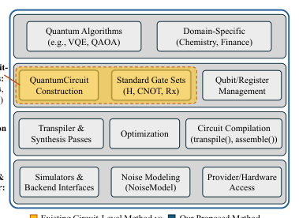
<figcaption class="paper-figure-caption"><b>Fig 1.</b> Figure 1: Comparison of Fuzzing Scopes.</figcaption>
</figure>
<figure class="paper-figure-card">
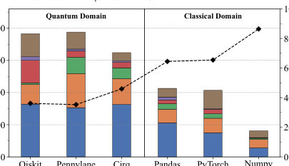
<figcaption class="paper-figure-caption"><b>Fig 2.</b> Figure 3: Empirical evaluation of the validity and error patterns in LLM-generated fuzzing test cases across quantum and classical libraries. The bars represent absolute error counts (left y-axis), while the dashed line indicates the validity rate (right y-axis).</figcaption>
</figure>
<figure class="paper-figure-card">
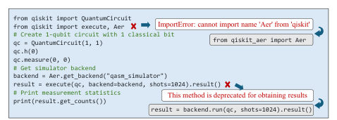
<figcaption class="paper-figure-caption"><b>Fig 3.</b> Figure 4: Code example of typical errors in quantum computing libraries generated by LLMs.</figcaption>
</figure>
<figure class="paper-figure-card">
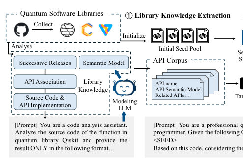
<figcaption class="paper-figure-caption"><b>Fig 4.</b> Figure 5: The workflow of KQFuzz for detecting bugs in quantum libraries.</figcaption>
</figure>
<figure class="paper-figure-card">
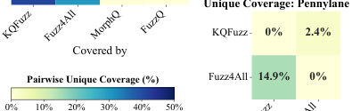
<figcaption class="paper-figure-caption"><b>Fig 5.</b> Figure 6: Pairwise unique coverage comparison.</figcaption>
</figure>
</div>

<p><strong>Summary.</strong> This paper introduces KQFuzz, a novel knowledge-guided fuzzer designed to test the reliability of quantum computing libraries. It enhances LLM-based testing by incorporating deep codebase knowledge and advanced mutation strategies. The resulting framework significantly improves bug discovery and code coverage across major quantum frameworks.</p>
<p><strong>Why it may be interesting.</strong> While focused on software testing rather than physical dynamics, the rigorous validation techniques developed for quantum circuit execution are crucial for building reliable simulation tools necessary for studying complex many-body physics or open quantum systems.</p>
<details>
<summary>Detailed structure</summary>
<p><strong>Main problem.</strong> Ensuring the reliability and correctness of quantum libraries is critical, but existing fuzzing methods lack flexibility and efficiency.</p>
<p><strong>Main result.</strong> KQFuzz significantly outperforms state-of-the-art methods, improving code coverage by up to 18.44% and discovering multiple confirmed bugs in major quantum libraries.</p>
<p><strong>Method.</strong> The authors propose KQFuzz, a knowledge-guided fuzzer that uses codebase knowledge to ground LLM test generation, combined with fitness-guided evaluation and two-level mutations.</p>
<p><strong>Model / system.</strong> The work targets software implementations of quantum computation within popular libraries like Qiskit, PennyLane, and Cirq, which operate on the quantum circuit model involving gates and qubits.</p>
<p><strong>Key observables.</strong> Code coverage improvement (up to 18.44%), bug discovery rate (13 bugs found), code validity, and execution time/token consumption.</p>
<p><strong>Important parameters / regimes.</strong> The two-level mutation strategy involves parameter-level and gate-level structural mutations; the fitness function incorporates gate diversity and entangled qubits.</p>
<p><strong>Assumptions / limitations.</strong> The analysis assumes that increased output token count in KQFuzz represents meaningful semantic content leading to higher quality tests, rather than mere redundancy.</p>
<p><strong>Figures summary.</strong> Figure 1 compares the scope of different fuzzer types; Figure 3 shows empirical comparison of validity rates for classical vs. quantum domains; Table 8 and 9 detail computational cost analysis across various stages and models.</p>
<p><strong>Paper structure.</strong> The paper first identifies the limitations of current fuzzing techniques, then introduces KQFuzz with its knowledge corpus construction (static metadata, API associations, semantic models), followed by detailed descriptions of the generation/mutation strategies. It presents empirical results comparing against baselines on multiple quantum libraries and concludes with an efficiency analysis.</p>
</details>
<details>
<summary>Abstract</summary>
<p>As quantum computing continually improves, ensuring the reliability and correctness of quantum libraries has become increasingly critical. To this end, many LLM-based fuzzing approaches towards quantum libraries have been proposed to uncover potential bugs. However, these methods still suffer from limitations such as insufficient flexibility and low efficiency, which hinder the progress of the quantum computing field. To address these challenges, we propose KQFuzz, a novel knowledge-guided fuzzer for quantum libraries. It leverages comprehensive codebase knowledge to ground LLM-based test generation, synergizing this with fitness-guided evaluation and two-level mutations to explore complex execution paths and trigger potential bugs. Firstly, KQFuzz introduces a novel prompting scheme tailored to quantum programs, which strategically incorporates knowledge of the codebase to efficiently generate high-quality quantum seed programs. Moreover, we develop evaluation and mutation strategies to handle the generated seed programs, facilitating efficient fuzzing execution while further enriching the diversity of the resulting test cases. We implement KQFuzz and conduct fuzzing on three popular quantum libraries, including Qiskit, PennyLane, and Cirq. Experimental results demonstrate that our approach significantly outperforms other state-of-the-art methods, with coverage improved by up to 18.44%. During the development of KQFuzz, we discovered 13 bugs, all of which have been confirmed and 12 have already been fixed by the developers.</p>
</details>
<p><sub><a href="#top">↑ back to top</a></sub></p>

<p><a id="paper-2607.25684"></a></p>
<h3 id="landau-levels-on-the-surface-of-a-cube"><a href="http://arxiv.org/abs/2607.25684v1">Landau Levels on the Surface of a Cube</a></h3>
<p><strong>Authors:</strong> Almila Kura, Bayram Tekin, Mehmet Özgür Oktel<br>
<strong>Type:</strong> theory · <strong>Category:</strong> other · <strong>PDF:</strong> <a href="https://arxiv.org/pdf/2607.25684v1">https://arxiv.org/pdf/2607.25684v1</a><br>
<strong>Analysis basis:</strong> full PDF text, analyzed in chunks
<strong>Topic relevance:</strong> <code>analog quantum simulation</code> <strong>1/5</strong></p>
<div class="figure-strip-hint">↔ Scroll figures horizontally</div>
<div class="paper-figures-scroll">
<figure class="paper-figure-card">
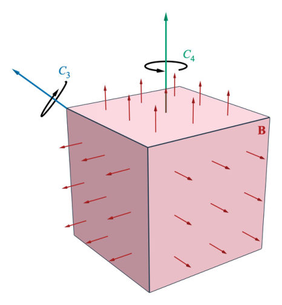
<figcaption class="paper-figure-caption"><b>Fig 1.</b> FIG. 1. Schematic of a cube enclosing a magnetic monopole. The red arrows show the constant outward face-normal mag- netic field. The fourfold axis C4, passing through the cen- ters of opposite faces, and the threefold axis C3, lying along a body diagonal, generate the proper octahedral rotation group O. Other rotations, such as C2, are obtained as products of these generators.</figcaption>
</figure>
<figure class="paper-figure-card">
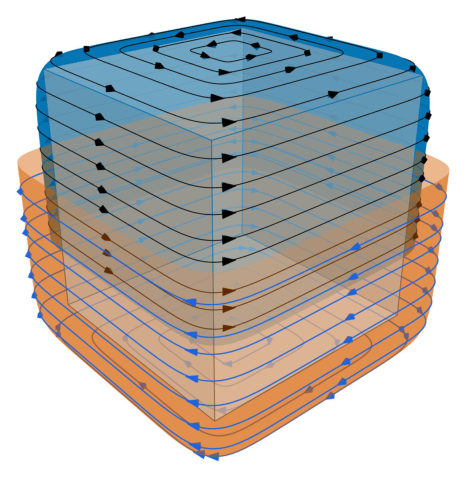
<figcaption class="paper-figure-caption"><b>Fig 2.</b> FIG. 2. Two-patch Wu–Yang construction of the vector po- tential on the cube. Gauge ⃗AI (blue region, black stream- lines) covers z &gt; −z0, while gauge II ⃗AII (orange region, blue streamlines) covers z &lt; z0; the unequal displayed extents are chosen only to make the overlap visible. Each vector poten- tial produces the same outward face-normal magnetic field on its domain. In the overlap region, the two descriptions are related by the gauge transformation in Eq. (9), and therefore give the same physical field and observables.</figcaption>
</figure>
<figure class="paper-figure-card">

<figcaption class="paper-figure-caption"><b>Fig 3.</b> FIG. 3. Gauge-covariant link variables and Wu–Yang patch stitching for Nd = 4. Each face contains (Nd −1)2 = 9 pla- quettes, each carrying magnetic flux ϕ = B/9. An arrow on a link indicates the direction in which its hopping phase is accumulated; reversing the hopping direction complex con- jugates this phase. The finite-difference equations for sites with z &gt; 0 and z &lt; 0 are written in gauges I and II, respec- tively. Links crossing the artificial cut at z = 0, shown by the red double arrows, contain the appropriate Wu–Yang transi- tion factors. On the lateral faces their phase is proportional to Λ(s) = 3Bs/2 and therefore increases linearly with the perimeter coordinate s. These...</figcaption>
</figure>
<figure class="paper-figure-card">
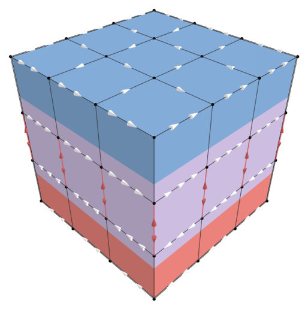
<figcaption class="paper-figure-caption"><b>Fig 4.</b> Figure 3 illustrates this construction for Nd = 4. Each face is divided into (Nd −1)2 = 9 plaquettes, so the mag- netic flux through each plaquette is ϕ = B/(Nd −1)2 = B/9. An arrow on a link indicates the direction in which the displayed hopping phase is accumulated; hopping in the opposite direction carries the complex-conjugate phase. The link variables in the upper and lower halves of the cube are calculated in gauges I and II, respectively. For links crossing the artificial cut, the hopping ampli- tude also contains the Wu–Yang transition factor. On the lateral faces this factor depends on the perimeter co- ordinate s through Λ(s) = 3Bs/2, and hence its phase varies linearly along the...</figcaption>
</figure>
<figure class="paper-figure-card">
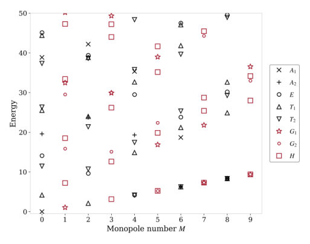
<figcaption class="paper-figure-caption"><b>Fig 5.</b> FIG. 4. Energy spectrum of the ten lowest manifolds as a function of monopole number M, computed at Nd = 18 and listed in Table III. Manifolds are classified by the irreducible representations of the cubic rotation group O for even M, or by the spinorial representations of the binary octahedral group 2O for odd M.</figcaption>
</figure>
</div>

<p><strong>Summary.</strong> This paper analyzes the quantum mechanics of a charged particle on a cubic surface pierced by a magnetic monopole. It rigorously handles the gauge structure using overlapping patches and classifies eigenstates based on the cube's rotational symmetry group. The key findings are the splitting of Landau levels due to discrete symmetry and the emergence of corner-localized gap states in the lattice approximation.</p>
<p><strong>Why it may be interesting.</strong> This work provides a concrete realization of how global topology (monopole flux) interacts with discrete geometric symmetry (the cube), leading to spectral splitting effects analogous to those seen in quantum Hall systems but constrained by crystal geometry.</p>
<details>
<summary>Detailed structure</summary>
<p><strong>Main problem.</strong> The study investigates the quantum mechanics of a charged particle confined to the surface of a cube enclosing a magnetic monopole.</p>
<p><strong>Main result.</strong> The spectrum exhibits Landau-level-like manifolds whose degeneracies are split by the discrete cubic symmetry, and additional gap states localized near the cube corners appear in the tight-binding limit.</p>
<p><strong>Method.</strong> The analysis uses continuum formulation with overlapping gauge patches (Wu–Yang construction) and is complemented by a gauge-covariant finite-difference discretization for numerical computation.</p>
<p><strong>Model / system.</strong> The system models a charged particle on the surface of a cube subjected to a magnetic field ($\vec{B}$) representing a monopole flux. The Hamiltonian involves the vector potential $\vec{A}(\vec{r})$ and is analyzed using symmetry groups like the cubic rotation group $O$.</p>
<p><strong>Key observables.</strong> Landau-level-like energy spectra, gap states localized at cube corners, and the classification of eigenstates by irreducible representations of $O$ or $2O$.</p>
<p><strong>Important parameters / regimes.</strong> The magnetic flux ($\Phi_B$), which must satisfy the Dirac quantization condition; the size parameter ($L$) of the cube.</p>
<p><strong>Assumptions / limitations.</strong> The method relies on using two overlapping gauge patches to handle the non-trivial topology imposed by the monopole flux, and that the physical symmetry is restored via gauge-modified rotation operators.</p>
<p><strong>Figures summary.</strong> Figures illustrate wavefunction probability densities $|\Psi|^2$ and phase plots ($\arg(\Psi)$) across different symmetry multiplets ($A_1, T_1$, etc.) for varying monopole charges ($M$).</p>
<p><strong>Paper structure.</strong> The paper progresses from establishing the necessity of multi-patch gauge constructions to analyzing the resulting symmetries using group theory, culminating in numerical computation and visualization of the energy spectrum and wavefunctions.</p>
</details>
<details>
<summary>Abstract</summary>
<p>We study the quantum mechanics of a charged particle confined to the surface of a cube enclosing a magnetic monopole. The magnetic field is chosen to have a constant magnitude on each face and to point along the outward normal, preserving the rotational symmetry of the cube. We formulate the continuum problem using two gauge patches on the cube surface and show that consistency of the wavefunction gives the Dirac quantization condition. Since an explicit vector potential does not remain invariant under ordinary rotations, we construct gauge-modified rotation operators and use them to classify the eigenstates. Even monopole charges are described by the irreducible representations of the cubic rotation group O, while odd monopole charges require the spinorial representations of the binary octahedral group 2O. We compute the spectrum with a gauge-covariant finite-difference discretization and find Landau-level-like manifolds whose degeneracies are split by the discrete cubic symmetry. We also study the corresponding tight-binding Hofstadter problem on the discretized cube. The resulting spectrum contains the usual magnetic subband structure together with additional gap states localized near the cube corners.</p>
</details>
<p><sub><a href="#top">↑ back to top</a></sub></p>

<p><a id="paper-2607.24936"></a></p>
<h3 id="momentum-selective-two-component-excitations-in-electron-doped-mott-insulators"><a href="http://arxiv.org/abs/2607.24936v1">Momentum-Selective Two-Component Excitations in Electron-Doped Mott Insulators</a></h3>
<p><strong>Authors:</strong> Zeyu Han, Can Cui, Jia-Xin Zhang, Zheng-Yu Weng<br>
<strong>Type:</strong> theory · <strong>Category:</strong> strongly correlated electrons · <strong>PDF:</strong> <a href="https://arxiv.org/pdf/2607.24936v1">https://arxiv.org/pdf/2607.24936v1</a><br>
<strong>Analysis basis:</strong> full PDF text, analyzed in chunks
<strong>Topic relevance:</strong> <code>Keldysh / 2PI / non-Gaussian methods</code> <strong>1/5</strong></p>
<div class="figure-strip-hint">↔ Scroll figures horizontally</div>
<div class="paper-figures-scroll">
<figure class="paper-figure-card">
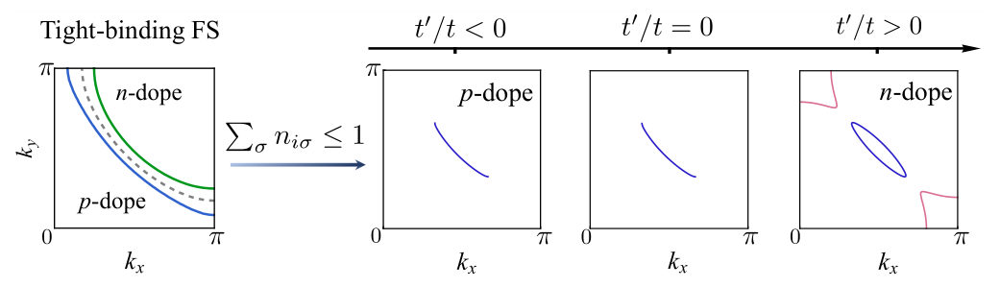
<figcaption class="paper-figure-caption"><b>Fig 1.</b> FIG. 1. Distinct evolution of Fermi surfaces (FS) away from half-filling (δ = 0). (Left) Non-interacting tight-binding model with a fixed t′ = −0.25t (t &gt; 0) in the first quadrant of the Brillouin zone, showing the Fermi surfaces for hole doping (δ = 0.15, p- dope, blue line), electron doping (δ = 0.15, n-dope, green line), and half-filling (gray dashed line) obtained by simply tuning the chemical potential. (Right) Schematic Fermi surfaces in the presence of a large Mott gap enforced by the no-double-occupancy constraint P</figcaption>
</figure>
<figure class="paper-figure-card">
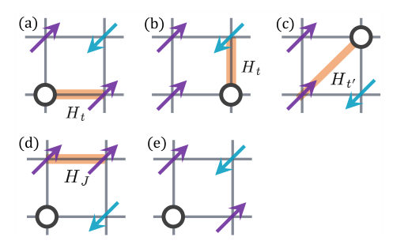
<figcaption class="paper-figure-caption"><b>Fig 2.</b> FIG. 2. Panels (a)–(e) illustrate a hopping process around the minimal triangular loop on an antiferromagnetic back- ground. In the first step, a hole exchanges positions with an up spin and subsequently with a down spin via the nearest- neighbor hopping channel t. It then exchanges with another spin through the next-nearest-neighbor hopping channel t′. Finally, the two remaining adjacent spins exchange positions, restoring the plaquette to its original configuration. Under the Ising basis, the entire process from (a) to (e) contributes a sign proportional to sgn(t′).</figcaption>
</figure>
<figure class="paper-figure-card">
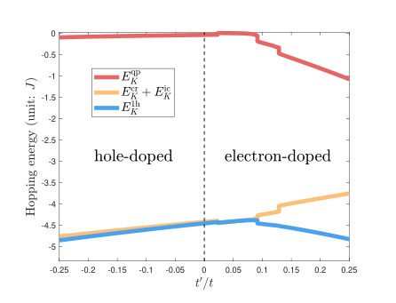
<figcaption class="paper-figure-caption"><b>Fig 3.</b> FIG. 3. Kinetic energy components Eqp K , Eic K + Ecr K and E1h K (defined in Eq. (16)) as functions of t′/t, computed using VMC on a 12 × 12 lattice. The abrupt jumps originate from level crossings.</figcaption>
</figure>
<figure class="paper-figure-card">
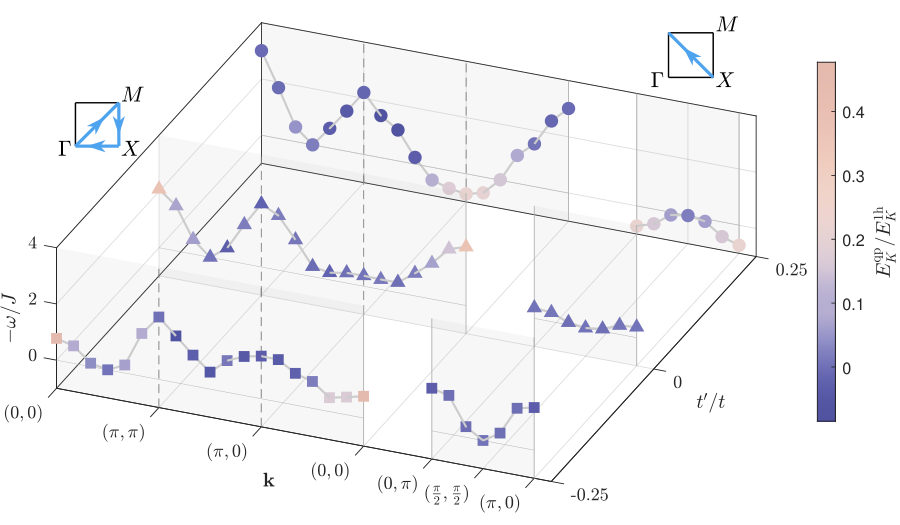
<figcaption class="paper-figure-caption"><b>Fig 4.</b> FIG. 4. Quasiparticle dispersion ω(k) and the ratio C(k) = Eqp K (k)/E1h K (k) obtained from VMC simulations on a 12×12 lattice with t′ = 0, ±0.25t. For each momentum point k, the dispersion ω(k) is extracted from the maximum of the spectral function An(k, ω), and the corresponding state with the largest spectral weight is used to evaluate the kinetic-energy ratio C(k). To make the vertical axis follow the usual convention of band dispersion, we use −ω/J on the ordinate.</figcaption>
</figure>
<figure class="paper-figure-card">
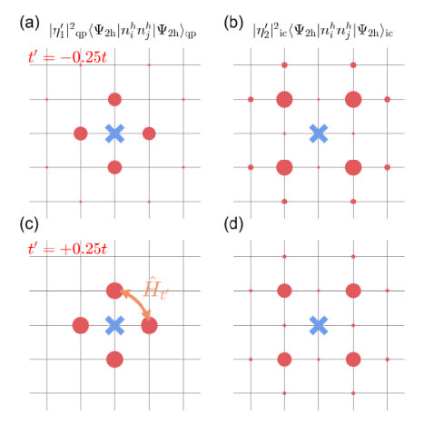
<figcaption class="paper-figure-caption"><b>Fig 5.</b> FIG. 5. Expectation value of the hole-hole correlator ⟨Ψ|nh i nh j |Ψ⟩evaluated for the two components of the two-hole ground state on a 12 × 12 system, |Ψ⟩= |Ψqp⟩2h and |Ψic⟩2h. Panels (a) and (b) correspond to t′ = −0.25t, while panels (c) and (d) correspond to t′ = 0.25t. The sizes of the red points represent the relative magnitude of the correlator, where one hole position i is fixed at the blue cross. For comparison be- tween the t′ = ±0.25t cases, the correlator is normalized by</figcaption>
</figure>
</div>

<p><strong>Summary.</strong> This work tackles the asymmetry between electron and hole doping in Mott insulators by modeling the system using the t-t'-J Hamiltonian. It reveals that the ground state has two coupled components: a coherent quasiparticle and an incoherent composite part. The relative dominance of resonance versus coherent propagation dictates whether low-energy excitations are concentrated at the node (hole-doped) or the antinode (electron-doped).</p>
<p><strong>Why it may be interesting.</strong> The detailed momentum-space separation of spectral weight based on doping sign provides a concrete theoretical mechanism explaining the observed nodal-antinodal dichotomy in cuprates, which is crucial for understanding high-Tc superconductivity mechanisms.</p>
<details>
<summary>Detailed structure</summary>
<p><strong>Main problem.</strong> The work addresses the observed asymmetry in low-energy single-particle excitations between electron-doped and hole-doped cuprates, which challenges a unified description within standard doped Mott insulator frameworks.</p>
<p><strong>Main result.</strong> The ground state exhibits a two-component structure; for hole doping, resonance dominates at the node, while for electron doping, coherent quasiparticle propagation is selectively enhanced in the antinode, causing momentum-space separation.</p>
<p><strong>Method.</strong> Theoretical analysis using the t-t'-J model combined with Variational Monte Carlo (VMC) simulations for single-hole excitations and mean-field treatments of fractionalization.</p>
<p><strong>Model / system.</strong> The study focuses on cuprates modeled by the t-t'-J Hamiltonian, investigating doping effects in both electron ($t'>0$) and hole ($t'<0$) regimes. The analysis involves decomposing the ground state into coherent quasiparticle and incoherent composite components.</p>
<p><strong>Key observables.</strong> Low-energy single-particle spectral weight $Z_k$, momentum-space distribution of excitations (nodal vs. antinodal), and kinetic energy contributions from different component interactions.</p>
<p><strong>Important parameters / regimes.</strong> Doping level ($\delta$), hopping parameters ($t, t', J$), and the sign of $t'$ which dictates the doping type (hole vs. electron).</p>
<p><strong>Assumptions / limitations.</strong> The ground-state wave function is assumed to possess a generic two-component structure; approximations are made in mean-field treatments involving gauge fields and path integrals.</p>
<p><strong>Figures summary.</strong> FIG. ES12 compares the quasiparticle spectral weight $Z_k$ for single holes across different doping regimes, showing distinct momentum dependence based on the sign of $t'$.</p>
<p><strong>Paper structure.</strong> The paper establishes the two-component nature of the ground state in the t-t'-J model. It then analyzes the physics separately for hole-doped ($t'<0$) and electron-doped ($t'>0$) systems, detailing how resonance or coherent propagation dominates in each case to explain experimental asymmetries.</p>
</details>
<details>
<summary>Abstract</summary>
<p>Experimental studies reveal a striking asymmetry in low-energy single-particle excitations between electron- and hole-doped cuprates. Electron-doped cuprates display a nontrivial dichotomy: Fermi-liquid-like behavior (suggesting weaker electronic correlations) coexists with correlation-driven features typical of hole-doped systems. This dual nature challenges a unified description within a doped Mott insulator framework. The present work addresses this issue by establishing that the ground-state wave function of the $t$-$t'$-$J$ model generically possesses a two-component structure, comprising a coherent quasiparticle and an incoherent composite component. The kinetic energy arises from both the intrinsic propagation of the coherent quasiparticle and the resonance between these components. Using variational Monte Carlo at the level of a single hole, we show that for hole doping ($t'<0$), this resonance between components dominates and concentrates in the nodal region at low energies. This emergent propagation induced by resonance can be physically interpreted as originating from the recombination of fractionalized degrees of freedom, which drives various phenomena associated with strong correlations. Conversely, for electron doping ($t'>0$), the coherent quasiparticle propagation, which exhibits conventional properties of a Fermi liquid, is selectively enhanced in the antinodal region at low energies. This produces a separation in momentum space for systems with electron doping: the antinodal spectral weight at low energies is governed by the coherent quasiparticle, fundamentally differing from the nodal region, which remains dominated by the incoherent composite component. Motivated by such a structure and guided by experimental observations, we propose a phenomenological Green's function at finite doping, yielding spectral features consistent with experiments.</p>
</details>
<p><sub><a href="#top">↑ back to top</a></sub></p>

<p><a id="paper-2607.24944"></a></p>
<h3 id="organizing-principles-for-moire-quantum-matter"><a href="http://arxiv.org/abs/2607.24944v1">Organizing Principles for Moiré Quantum Matter</a></h3>
<p><strong>Authors:</strong> Qiaoling Xu, Yifan Gao, Tao Zhang, Ammon Fischer, Yi Jiang, Hanqi Pi, Zike Fan, Dongdong An, Kun Zhou, Yingjian Li, Yongqing Li, Yuhao Fu, Lei Wang, Lijun Zhang, B. Andrei Bernevig, Dante M. Kennes, Enge Wang, Angel Rubio, Lede Xian<br>
<strong>Type:</strong> theory · <strong>Category:</strong> strongly correlated electrons · <strong>PDF:</strong> <a href="https://arxiv.org/pdf/2607.24944v1">https://arxiv.org/pdf/2607.24944v1</a><br>
<strong>Analysis basis:</strong> full PDF text, analyzed in chunks
<strong>Topic relevance:</strong> <code>analog quantum simulation</code> <strong>1/5</strong></p>
<div class="figure-strip-hint">↔ Scroll figures horizontally</div>
<div class="paper-figures-scroll">
<figure class="paper-figure-card">
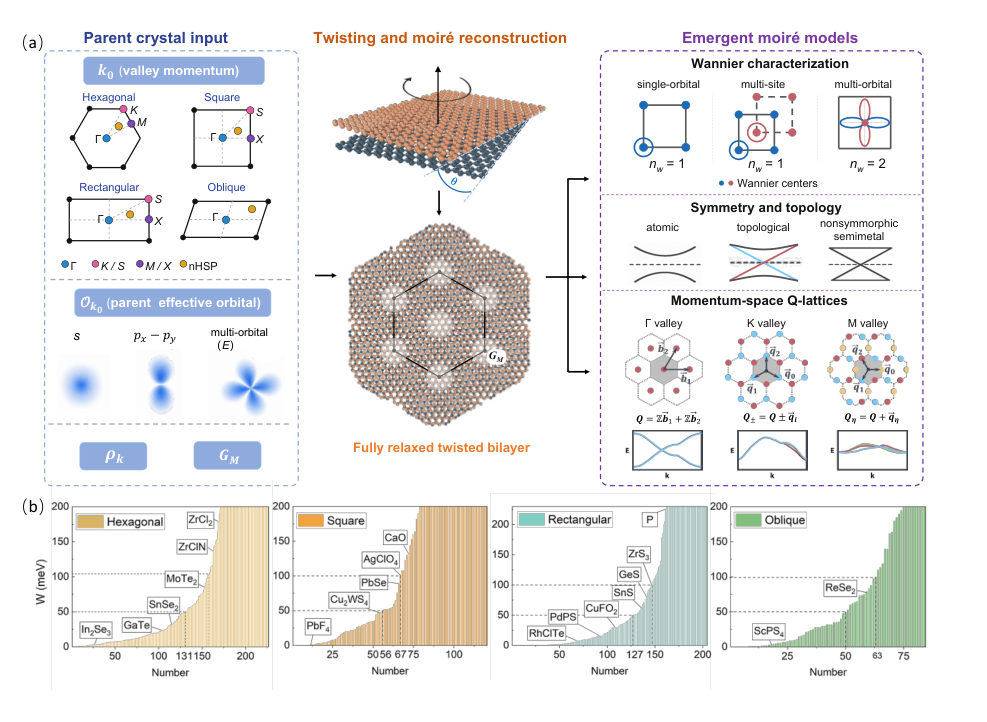
<figcaption class="paper-figure-caption"><b>Fig 1.</b> FIG. 1. Design map and first-principles atlas of emergent moir´e models. (a) Schematic represen-</figcaption>
</figure>
<figure class="paper-figure-card">
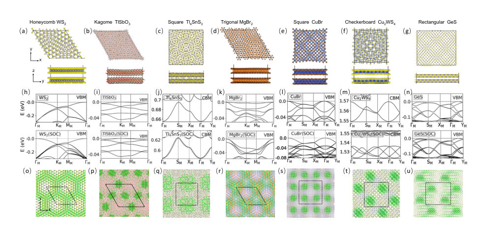
<figcaption class="paper-figure-caption"><b>Fig 2.</b> FIG. 2. Flat-band manifolds as emergent Hubbard-model building blocks. a-g, Top and side</figcaption>
</figure>
<figure class="paper-figure-card">
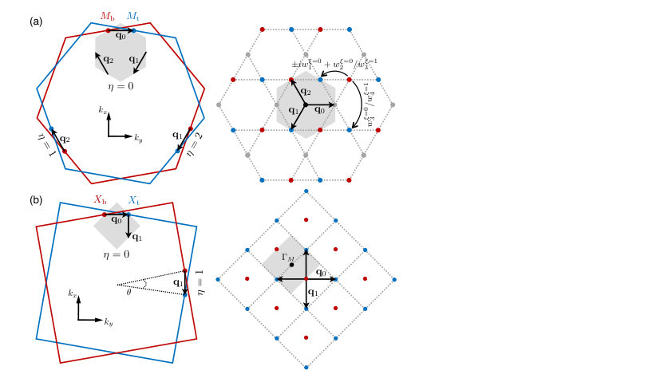
<figcaption class="paper-figure-caption"><b>Fig 3.</b> FIG. 3. Momentum-space geometry of M- and X-valley moir´e systems. Geometric relationship</figcaption>
</figure>
<figure class="paper-figure-card">
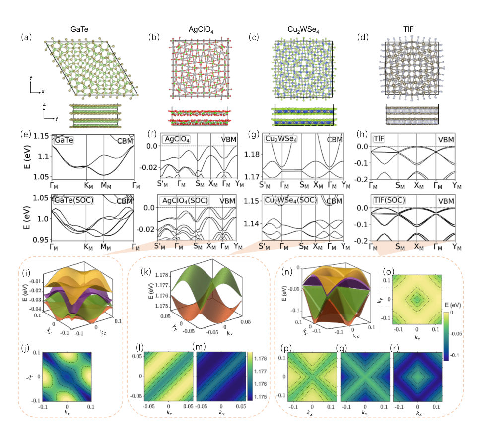
<figcaption class="paper-figure-caption"><b>Fig 4.</b> FIG. 4. Boundary-valley moir´e bands and quasi-one-dimensional dispersions. (a-d) Top and</figcaption>
</figure>
<figure class="paper-figure-card">
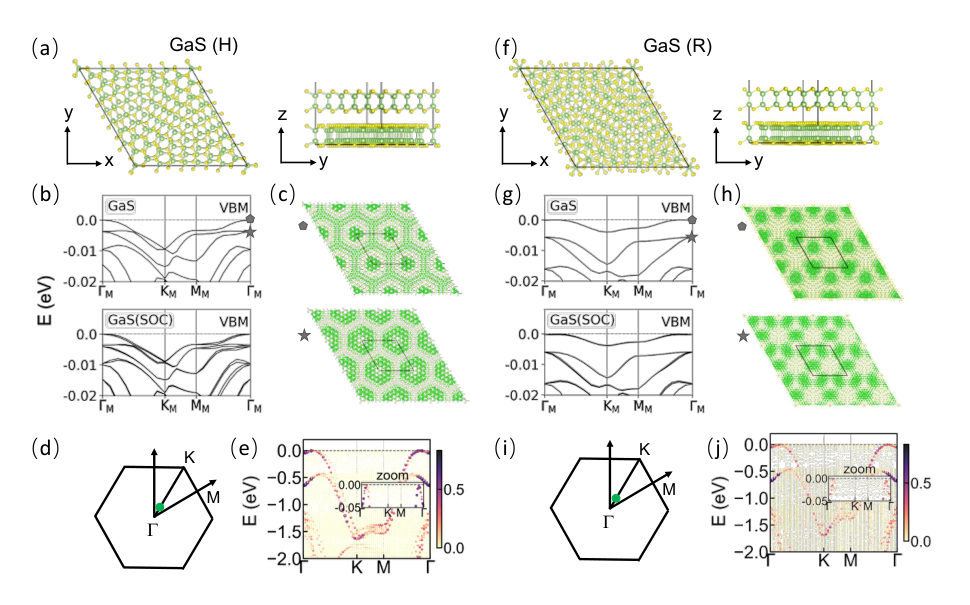
<figcaption class="paper-figure-caption"><b>Fig 5.</b> FIG. 5. Symmetry-selected multiplets from nearby generic-momentum valleys in twisted GaS.</figcaption>
</figure>
</div>

<p><strong>Summary.</strong> This paper introduces a general, symmetry-based framework to classify emergent moiré Hamiltonians in twisted van der Waals heterostructures. By analyzing hundreds of bilayers using first-principles calculations, the authors move beyond simple single-orbital models. The resulting 'valley-orbital-symmetry framework' provides a systematic guide for engineering correlated and topological quantum phases.</p>
<p><strong>Why it may be interesting.</strong> This work provides a powerful theoretical dictionary for designing strongly correlated quantum materials by linking fundamental crystal symmetry and orbital physics directly to the required Hubbard model parameters.</p>
<details>
<summary>Detailed structure</summary>
<p><strong>Main problem.</strong> To develop a general organizing principle for understanding the diverse emergent low-energy moiré Hamiltonians arising from twisted van der Waals heterostructures, moving beyond conventional single-orbital/K-valley paradigms.</p>
<p><strong>Main result.</strong> The authors established a comprehensive 'valley-orbital-symmetry framework' that classifies emergent moiré physics based on parent material properties and symmetry constraints. This framework reveals multiple routes to correlated phases, including honeycomb, kagome, and multi-orbital flat bands.</p>
<p><strong>Method.</strong> The study combines fully relaxed first-principles calculations (DFT) with advanced analysis techniques like band unfolding, elementary band representation (EBR), and detailed symmetry group theory applied across hundreds of twisted bilayers.</p>
<p><strong>Model / system.</strong> The physical system is the moiré superlattice formed by twisting van der Waals bilayers. The theoretical framework aims to map the parent material's electronic structure ($\mathbf{k}_0, \mathcal{O}_{\mathbf{k}_0}$) onto an effective low-energy Hamiltonian defined by symmetry ($G_M$) and orbital content.</p>
<p><strong>Key observables.</strong> Wannier characterization (W), band connectivity (C), topological classification (I), and the resulting $Q$-lattice structure are key diagnostics used to classify emergent models.</p>
<p><strong>Important parameters / regimes.</strong> The analysis spans over 600 commensurate twisted bilayers across all 2D lattice classes, focusing on low-energy manifolds derived from parent band edges.</p>
<p><strong>Assumptions / limitations.</strong> The approach assumes that the physics can be systematically organized by mapping parent band edge properties and symmetry constraints to the emergent moiré Hamiltonian structure.</p>
<p><strong>Figures summary.</strong> Figure 1 illustrates the design map connecting parent band edge properties to the resulting moiré Hamiltonians, while other figures detail specific flat-band manifolds realized in various lattice classes.</p>
<p><strong>Paper structure.</strong> The paper introduces a general organizing map linking momentum location ($\mathbf{k}_0$), orbital character ($\mathcal{O}_{\mathbf{k}_0}$), and symmetry ($G_M$) to the resulting moiré Hamiltonian. It then systematically applies this framework across numerous material examples, demonstrating how different symmetries enforce specific types of correlated models (e.g., honeycomb vs. kagome).</p>
</details>
<details>
<summary>Abstract</summary>
<p>Moiré flat bands in van der Waals bilayers are usually discussed through a small set of mechanisms associated with the $Γ$ and $K$ valleys of hexagonal crystals, and more recently with $M$-valleys systems. Here we show that this view is incomplete. The momentum-space location and effective local orbital character of the monolayer's band edge, in conjunction with the moiré symmetry and the symmetry representations of the resulting bands, provide a general set of organizing variables for the emergent low-energy moiré Hamiltonian. Applying fully relaxed first-principles calculations, band unfolding and symmetry-representation analysis to more than 600 commensurate twisted bilayers spanning all 2D lattice classes, we identify several routes to moiré quantum matter beyond the conventional single-orbital paradigm. The resulting flat bands realize trigonal, honeycomb, square, checkerboard and kagome-like Hubbard models with single-orbital, multi-orbital and multi-site Hilbert spaces; spin-orbit-coupled multi-orbital flat bands exhibit symmetry-indicated topology beyond the conventional $K$-valley setting; and nonsymmorphic moiré symmetries enforce semimetallic flat-band connectivity. Analogous quasi-one-dimensional flat-band structures are found in $M$-valley hexagonal systems and $X$-valley square or rectangular systems resulting from emergent momentum-space nonsymmorphic symmetries. Separately, coupled multi-valley manifolds with kagome-like connectivity are identified in several systems whose parent band edges lie at non-high-symmetry points. These results establish a valley-orbital-symmetry framework for connecting parent-material electronic structure to emergent moiré Hamiltonians relevant to correlated, topological and symmetry-enforced moiré phases.</p>
</details>
<p><sub><a href="#top">↑ back to top</a></sub></p>

<p><a id="paper-2607.25162"></a></p>
<h3 id="quantum-transformer-bsde-solver-via-multi-layer-fully-connected-variational-quantum-circuits"><a href="http://arxiv.org/abs/2607.25162v1">Quantum Transformer BSDE Solver via Multi-Layer Fully-Connected Variational Quantum Circuits</a></h3>
<p><strong>Authors:</strong> Howard Su, Huan-Hsin Tseng, Chi-Sheng Chen, Lance Bai<br>
<strong>Type:</strong> both · <strong>Category:</strong> numerical methods · <strong>PDF:</strong> <a href="https://arxiv.org/pdf/2607.25162v1">https://arxiv.org/pdf/2607.25162v1</a><br>
<strong>Analysis basis:</strong> full PDF text, analyzed in chunks
<strong>Topic relevance:</strong> <code>methods for driven-dissipative</code> <strong>1/5</strong></p>
<div class="figure-strip-hint">↔ Scroll figures horizontally</div>
<div class="paper-figures-scroll">
<figure class="paper-figure-card">
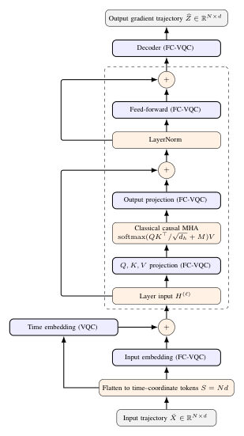
<figcaption class="paper-figure-caption"><b>Fig 1.</b> Fig. 1. The Quantum Transformer model architecture.</figcaption>
</figure>
<figure class="paper-figure-card">
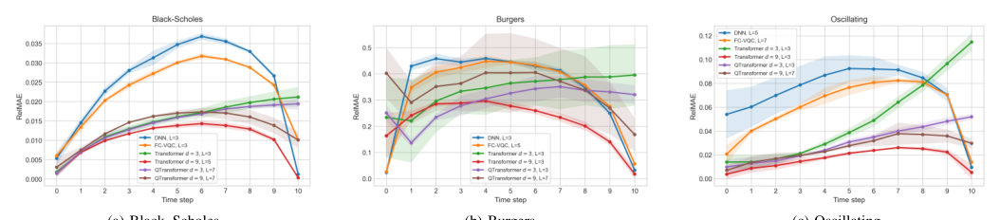
<figcaption class="paper-figure-caption"><b>Fig 2.</b> Fig. 2. Trajectory Relative MAE across time steps. Solid curves show the mean over random seeds, and shaded regions indicate one standard deviation.</figcaption>
</figure>
</div>

<p><strong>Summary.</strong> This paper introduces a Quantum Transformer solver that uses Multi-Layer Fully-Connected Variational Quantum Circuits (FC-VQC) to solve complex, high-dimensional Partial Differential Equations reformulated as BSDEs. By integrating causal self-attention into the quantum circuit structure, the model achieves state-of-the-art performance compared to classical and non-attentive quantum baselines on several physical benchmarks.</p>
<p><strong>Why it may be interesting.</strong> While the application is numerical PDE solving, the core innovation lies in mapping complex functional approximation tasks onto hybrid quantum-classical neural network architectures (QTransformer/FC-VQC), which has implications for simulating quantum dynamics or high-dimensional physical systems.</p>
<details>
<summary>Detailed structure</summary>
<p><strong>Main problem.</strong> The core problem is solving high-dimensional parabolic partial differential equations (PDEs) by reformulating them into Backward Stochastic Differential Equations (BSDEs). This is crucial in fields like stochastic control and physics.</p>
<p><strong>Main result.</strong> The proposed Quantum Transformer solver consistently improves upon non-attentive quantum circuit baselines, demonstrating that combining causal attention with FC-VQC provides an effective architecture for high-dimensional BSDE trajectory learning.</p>
<p><strong>Method.</strong> The authors propose a Quantum Transformer model where trainable parameters are confined within Multi-Layer Fully-Connected Variational Quantum Circuits (FC-VQC) modules integrated into the standard Transformer structure. Causal self-attention is used to process time-coordinate tokens derived from the state trajectory.</p>
<p><strong>Model / system.</strong> The method targets solving BSDEs associated with semilinear PDEs (e.g., Black–Scholes, Burgers-type). The quantum component uses FC-VQC circuits to parameterize the necessary mappings within the Transformer architecture.</p>
<p><strong>Key observables.</strong> Mean Trajectory Relative L2 Error (LRE) and Relative Mean Absolute Error (RelMAE), with lower values indicating better performance across three benchmark PDEs.</p>
<p><strong>Important parameters / regimes.</strong> Model depth ($L \in \{3, 5, 7\}$) and hidden dimension ($d_m$). The comparison highlights the effect of attention versus non-attentive circuits.</p>
<p><strong>Assumptions / limitations.</strong> The method assumes that structural operations (like attention mechanisms) can remain classical and parameter-free while confining all trainable parameters to scalable FC-VQC modules.</p>
<p><strong>Figures summary.</strong> Table I compares LRE across various model configurations (DNN, FC-VQC, Transformer, QTransformer). Figure 1 illustrates the integrated Quantum Transformer architecture using FC-VQC modules in key layers.</p>
<p><strong>Paper structure.</strong> The paper introduces the problem of solving PDEs via BSDEs. It then details the novel QTransformer architecture integrating FC-VQC into the Transformer framework. Results are presented by comparing performance against classical and non-attentive quantum baselines on multiple benchmarks, concluding with an analysis of architectural components.</p>
</details>
<details>
<summary>Abstract</summary>
<p>Solving high-dimensional parabolic partial differential equations (PDEs) is important in engineering, physics, and stochastic control. Deep BSDE methods reformulate semilinear PDEs as backward stochastic differential equations and admit a model-based reinforcement learning interpretation, where trajectories are generated from known stochastic dynamics while a trainable model learns the gradient-related control process. We propose a Quantum Transformer BSDE solver based on Multi-Layer Fully-Connected Variational Quantum Circuits (FC-VQC). The method treats the normalized state trajectory as time--coordinate tokens and applies causal self-attention to learn interactions in the adapted BSDE gradient process. All trainable model parameters are contained within the FC-VQC embedding, projection, feed-forward, and decoder modules, while attention and structural operations remain classical and parameter-free. Experiments on three d=36 PDE benchmarks show that QTransformer consistently improves over the non-attentive FC-VQC baseline and outperforms the classical Transformer at compact hidden widths, while the wider classical Transformer achieves the best overall accuracy. These results demonstrate that combining causal attention with FC-VQC provides an effective quantum architecture for high-dimensional BSDE trajectory learning.</p>
</details>
<p><sub><a href="#top">↑ back to top</a></sub></p>

<p><a id="paper-2607.25170"></a></p>
<h3 id="qubo-based-optimization-of-social-indicator-configurations-for-working-age-population-growth"><a href="http://arxiv.org/abs/2607.25170v1">QUBO-Based Optimization of Social Indicator Configurations for Working-Age Population Growth</a></h3>
<p><strong>Authors:</strong> Hayate Wada, Seiya Miyamoto, Tatsumasa Ogawa, Kazuki Uehara, Masaru Hitomi, Masayuki Ohzeki<br>
<strong>Type:</strong> theory · <strong>Category:</strong> other · <strong>PDF:</strong> <a href="https://arxiv.org/pdf/2607.25170v1">https://arxiv.org/pdf/2607.25170v1</a><br>
<strong>Analysis basis:</strong> full PDF text, analyzed in chunks
<strong>Topic relevance:</strong> <code>methods for driven-dissipative</code> <strong>1/5</strong></p>
<div class="figure-strip-hint">↔ Scroll figures horizontally</div>
<div class="paper-figures-scroll">
<figure class="paper-figure-card">
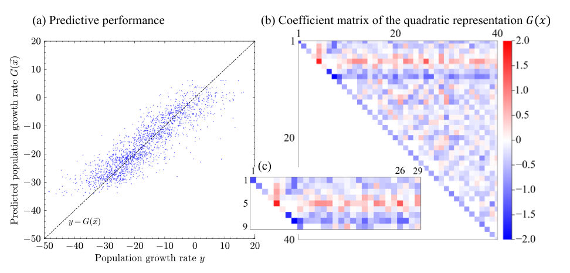
<figcaption class="paper-figure-caption"><b>Fig 1.</b> Figure 1. Performance and coefficient structure of the quadratic surrogate model G(⃗x). (a) Observed working-age population growth rate y versus the fitted value G(⃗x) for all municipalities. The dashed line represents the ideal relation y = G(⃗x). The test-set correlation coefficient was 0.84, with an average mean squared error of 33.36 and an average coefficient of determination of R2 = 0.76 over 20 train–test splits. (b) Heatmap of the coefficient matrix of G(⃗x) for the 40 binary variables obtained from the one-hot encoding of ten social indicators. Diagonal elements correspond to individual binary-variable contributions, and off-diagonal elements correspond to pairwise interactions....</figcaption>
</figure>
<figure class="paper-figure-card">
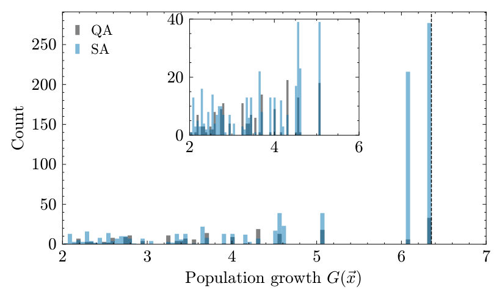
<figcaption class="paper-figure-caption"><b>Fig 2.</b> Figure 2. Sampling distributions obtained by simulated annealing and quantum annealing. The horizontal axis represents the surrogate value G(⃗x), corresponding to the predicted working-age population growth rate, and the vertical axis represents the number of samples. Only configurations satisfying the one-hot constraints are included. The vertical dashed line indicates the exact optimum obtained by Gurobi. The inset enlarges the low-count region to show feasible suboptimal configurations sampled by the annealing methods.</figcaption>
</figure>
<figure class="paper-figure-card">
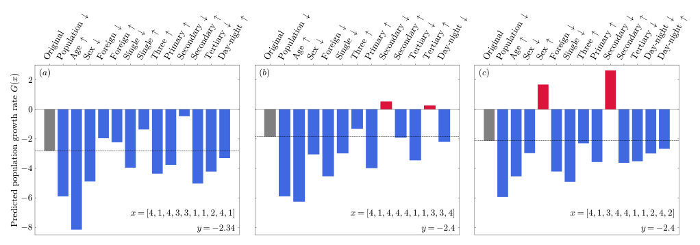
<figcaption class="paper-figure-caption"><b>Fig 3.</b> Figure 3. Predicted population growth rates, G(⃗x), obtained by virtually changing each municipal indicator by one discretized level for the three municipalities. The leftmost gray bar represents the prediction for the original feature vector⃗x, while the remaining bars represent the predictions obtained by changing only the corresponding indicator by one level, either decreasing (↓) or increasing (↑) it. The label ’Original’ denotes the original feature vector, and the other labels correspond to the municipal indicators listed in Table 1. Blue (red) bars indicate negative (positive) predicted population growth rates. The dashed line indicates the original predicted value.</figcaption>
</figure>
</div>

<p><strong>Summary.</strong> This paper applies a machine learning approach to model working-age population growth using local municipal social statistics. It formulates this relationship as a Quadratic Unconstrained Binary Optimization (QUBO) problem and solves it using quantum annealing techniques. The framework provides an interpretable tool for exploring potential policy configurations, though its results are limited to model-based exploration rather than causal prediction.</p>
<p><strong>Why it may be interesting.</strong> While applied to social science, the core methodology involves mapping complex combinatorial optimization problems onto QUBO Hamiltonians for solving with quantum annealers, which is relevant to general NISQ algorithm development.</p>
<details>
<summary>Detailed structure</summary>
<p><strong>Main problem.</strong> To develop an interpretable, optimization-ready framework connecting municipal social indicators to working-age population growth rates in aging societies.</p>
<p><strong>Main result.</strong> The QUBO formulation successfully models the non-linear interactions between social indicators, and quantum/simulated annealing methods consistently find the optimal configuration predicted by exact solvers.</p>
<p><strong>Method.</strong> A quadratic surrogate model is fitted using regression on discretized social data, then converted into a QUBO Hamiltonian to be minimized via quantum or simulated annealing optimization.</p>
<p><strong>Model / system.</strong> The system models working-age population growth rate ($y$) as a function of ten discrete social indicators ($\vec{x}$), formulated as a quadratic objective function $G(\vec{x})$ subject to binary constraints.</p>
<p><strong>Key observables.</strong> Test-set correlation coefficient (0.84) and average R-squared value (0.76); the optimal indicator configuration vector $\vec{x}_{opt}$.</p>
<p><strong>Important parameters / regimes.</strong> The penalty coefficient ($\alpha=3$) used for enforcing one-hot constraints in the QUBO formulation.</p>
<p><strong>Assumptions / limitations.</strong> The framework is explicitly an exploratory tool, not a causal estimate of policy interventions; the model assumes quadratic relationships between indicator levels.</p>
<p><strong>Figures summary.</strong> Figures show observed vs. fitted growth rates, heatmaps of the coefficient matrix $Q$ detailing pairwise interactions, and local sensitivity analyses showing predicted changes based on single-indicator flips.</p>
<p><strong>Paper structure.</strong> The paper first establishes the need for modeling population decline; it then details fitting a quadratic surrogate model to social data; this model is converted into a QUBO problem; finally, optimization using quantum/simulated annealing is performed and validated against exact solvers.</p>
</details>
<details>
<summary>Abstract</summary>
<p>The decline of the working-age population is a major challenge for regional sustainability, particularly in ageing societies such as Japan. We present a methodological demonstration of a quadratic unconstrained binary optimization (QUBO)-based framework for exploring social-indicator configurations associated with working-age population growth. Using Japanese municipal data, we regressed the 2010-2020 working-age population growth rate on ten discretized social indicators. The resulting quadratic surrogate model showed reasonable predictive performance, with a test-set correlation coefficient of 0.84 and an average R-squared value of 0.76. Its coefficient matrix provides an interpretable representation of individual indicator-level contributions and pairwise associations. We converted the fitted model into a QUBO formulation with one-hot constraints and optimized it using quantum annealing, simulated annealing, and Gurobi. All three methods identified the same optimal feasible configuration, while the annealing-based samplers also generated feasible suboptimal configurations with different predicted growth rates. Municipality-level single-indicator analyses showed that changing one indicator can increase or decrease the predicted growth rate depending on the other indicators. The framework provides an interpretable and optimization-ready approach for connecting municipal social statistics, nonlinear interactions, and model-based scenario generation. It should be regarded as an exploratory tool for policy discussion rather than as a causal estimate of policy interventions.</p>
</details>
<p><sub><a href="#top">↑ back to top</a></sub></p>

<p><a id="paper-2607.25704"></a></p>
<h3 id="verifiable-blind-probabilistic-error-cancellation"><a href="http://arxiv.org/abs/2607.25704v1">Verifiable blind probabilistic error cancellation</a></h3>
<p><strong>Authors:</strong> Bo Yang, Elham Kashefi, Harold Ollivier<br>
<strong>Type:</strong> theory · <strong>Category:</strong> quantum information and computing · <strong>PDF:</strong> <a href="https://arxiv.org/pdf/2607.25704v1">https://arxiv.org/pdf/2607.25704v1</a><br>
<strong>Analysis basis:</strong> full PDF text, analyzed in chunks
<strong>Topic relevance:</strong> <code>quantum measurements</code> <strong>1/5</strong></p>
<div class="figure-strip-hint">↔ Scroll figures horizontally</div>
<div class="paper-figures-scroll">
<figure class="paper-figure-card">
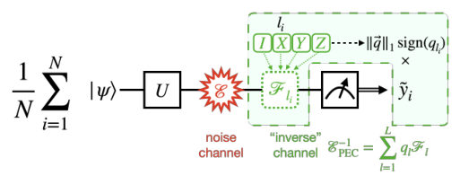
<figcaption class="paper-figure-caption"><b>Fig 1.</b> FIG. 1. Schematic illustration of the PEC process for a single-qubit operation affected by a stochastic Pauli noise EPEC. For each sample i ∈[N], the cancellation operation is chosen from Fli ∈{I, X, Y, Z} via the Monte-Carlo sampling. More generally, PEC can be implemented locally by inserting noise-cancellation operators at selected locations, based on the corresponding local noise models. After completing the total N rounds, the classical post-processing following Eq. (7) yields the mitigated estimate by PEC.</figcaption>
</figure>
<figure class="paper-figure-card">
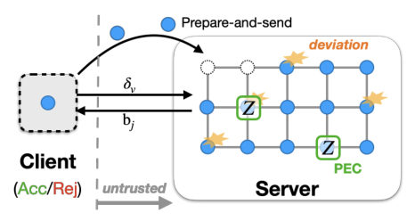
<figcaption class="paper-figure-caption"><b>Fig 2.</b> FIG. 2. Schematic illustration of a single round of the UBPEC protocol. All quantum systems outside the client’s trusted domain are considered untrusted, meaning deviations in this region are not assumed to follow any particular struc- ture or noise model.</figcaption>
</figure>
<figure class="paper-figure-card">
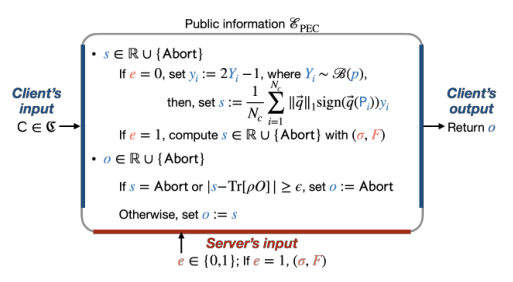
<figcaption class="paper-figure-caption"><b>Fig 3.</b> FIG. 3. Schematic illustration of the SDPEC resource, where p = Tr [(Pi ◦EPEC) (ρ) |+O⟩⟨+O|] and Pi ∈{I, Z}|V | is sam- pled with probability |⃗q(Pi)|/ ∥⃗q∥1.</figcaption>
</figure>
<figure class="paper-figure-card">
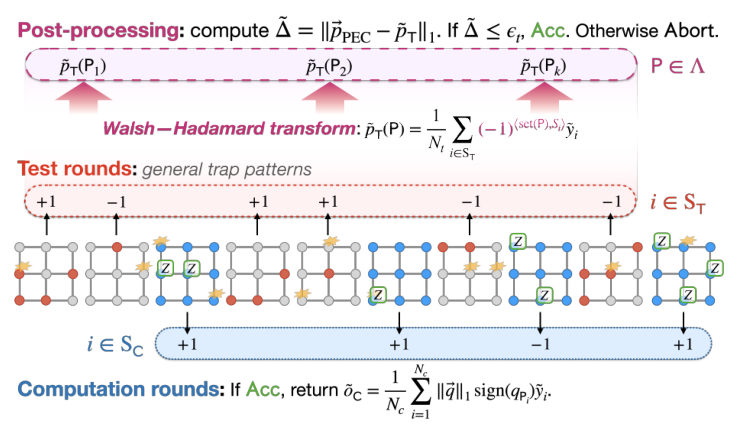
<figcaption class="paper-figure-caption"><b>Fig 4.</b> FIG. 4. Schematic illustration of the VBPEC protocol. Each small graph represents one delegated MBQC instance. Blue vertices denote computation vertices used in computation rounds i ∈SC, while red vertices denote the vertices selected by the test setting Si in test rounds i ∈ST, and the grey vertices are qubits outside Si. Yellow stars represent the noise or deviation occurring on the graph. The PEC cancellation operation is applied only on the computation rounds, shown as green boxes labelled Z, according to the probability decomposition ⃗q.</figcaption>
</figure>
<figure class="paper-figure-card">
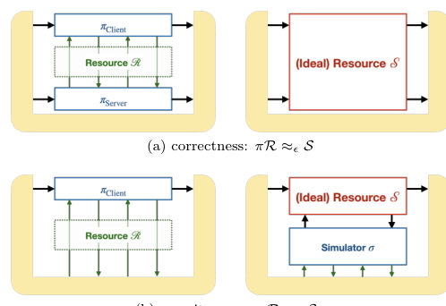
<figcaption class="paper-figure-caption"><b>Fig 5.</b> FIG. 5. The schematic illustrations of correctness and security are depicted in (a) and (b), respectively. On the basis of a se- cure resource R as an established channel between the Client and the Server, the protocol π = (πClient, πServer) constructs a new resource πR = πClientRπServer. The transcripts are written as arrows, and the yellow object is the distinguisher that manages the input and output transcripts between the resource and the protocol of interest.</figcaption>
</figure>
</div>

<p><strong>Summary.</strong> This paper presents Verifiable Blind Probabilistic Error Cancellation (VBPEC), a novel protocol that secures Quantum Error Mitigation (QEM) when running computations on untrusted quantum hardware. It achieves this by formally integrating PEC into composable security, allowing the active cancellation of noise rather than just tolerating it. This establishes a crucial pathway toward reliable and practical delegated quantum computation.</p>
<p><strong>Why it may be interesting.</strong> This work directly addresses the practical gap between theoretical quantum algorithms and noisy, untrusted hardware by providing rigorous cryptographic verification for error mitigation techniques.</p>
<details>
<summary>Detailed structure</summary>
<p><strong>Main problem.</strong> The core problem is establishing end-to-end security guarantees for quantum computations performed on untrusted, noisy hardware by integrating Quantum Error Mitigation (QEM) into verifiable protocols.</p>
<p><strong>Main result.</strong> The paper introduces Verifiable Blind Probabilistic Error Cancellation (VBPEC), the first secure protocol to integrate PEC within a composable security framework, providing cryptographic reliability for QEM.</p>
<p><strong>Method.</strong> It extends trap-based verification from deterministic checks to statistical tests that actively cancel noise rather than merely tolerating it, formalizing delegated mitigation as a cryptographic resource.</p>
<p><strong>Model / system.</strong> The work addresses the abstract model of quantum computation delegated to an untrusted server. The underlying physical processes involve observable estimation ($   ext{Tr}[
ho O]$) on near-future quantum hardware.</p>
<p><strong>Key observables.</strong> Observable expectation value $ ext{Tr}[
ho O]$, empirical estimator $\mu$, and security error (must be exponentially small).</p>
<p><strong>Important parameters / regimes.</strong> Estimation error $\epsilon$ and confidence level $\delta$; the number of samples $N_c$.</p>
<p><strong>Assumptions / limitations.</strong> The protocol assumes access to a fully malicious adversary model, requiring cryptographic guarantees for noise cancellation.</p>
<p><strong>Figures summary.</strong> Not specified in detail, but the notes imply schematics illustrating the integration of PEC into verifiable estimation protocols.</p>
<p><strong>Paper structure.</strong> The paper builds from standard observable estimation theory to Probabilistic Error Cancellation (PEC), extends this to a blind setting (BDPEC), and culminates in the universal framework (VBPEC) that provides cryptographic security guarantees for QEM.</p>
</details>
<details>
<summary>Abstract</summary>
<p>Quantum error mitigation (QEM) is an essential tool for mitigating hardware noise without incurring space overhead. Yet, its reliability depends on modeling, calibration, and implementation, leaving end-to-end security on untrusted quantum hardware unresolved. We address this problem by introducing verifiable blind probabilistic error cancellation (VBPEC), the first secure verification protocol against a fully malicious adversary that integrates QEM. VBPEC brings probabilistic error cancellation (PEC), a widely studied QEM technique, within the scope of composable security by formalizing delegated mitigation as a cryptographic resource in the abstract cryptography framework. The protocol performs PEC with perfect blindness and an exponentially small security error. VBPEC retains the absence of quantum-space overhead from recent statistically-secure verified quantum computation protocols and from PEC. The only overhead takes the form of additional repetitions due to the QEM procedure. To achieve this, we extend trap-based verification from deterministic pass/fail checks to statistical tests that benefit from QEM and develop a new proof technique that integrates the corresponding additional deviation sources. Rather than merely tolerating honest noise below a fixed threshold, VBPEC actively cancels it, enabling correctly mitigated estimates to be accepted with high probability without compromising security. Our framework thus establishes an essential route towards secure, reliable, and practical delegated quantum computation on near-future quantum hardware: VBPEC fundamentally improves the practicality of verification.</p>
</details>
<p><sub><a href="#top">↑ back to top</a></sub></p>
<h2 id="other-papers-5">Other papers (5)</h2>
<p><em>Papers from primary archives without highlighted authors or any topic match. Click to expand.</em></p>
<details>
<summary>Show other papers</summary>

<p><a id="paper-2607.26028"></a></p>
<h3 id="a-spectral-proof-of-the-hypergraph-moore-bound"><a href="http://arxiv.org/abs/2607.26028v1">A Spectral Proof of the Hypergraph Moore Bound</a></h3>
<p><strong>Authors:</strong> Alexander Schmidhuber, Matthew B. Hastings<br>
<strong>Type:</strong> theory · <strong>Category:</strong> other · <strong>PDF:</strong> <a href="https://arxiv.org/pdf/2607.26028v1">https://arxiv.org/pdf/2607.26028v1</a><br>
<strong>Analysis basis:</strong> full PDF text, analyzed in chunks</p>
<div class="figure-strip-hint">↔ Scroll figures horizontally</div>
<div class="paper-figures-scroll">
<figure class="paper-figure-card">
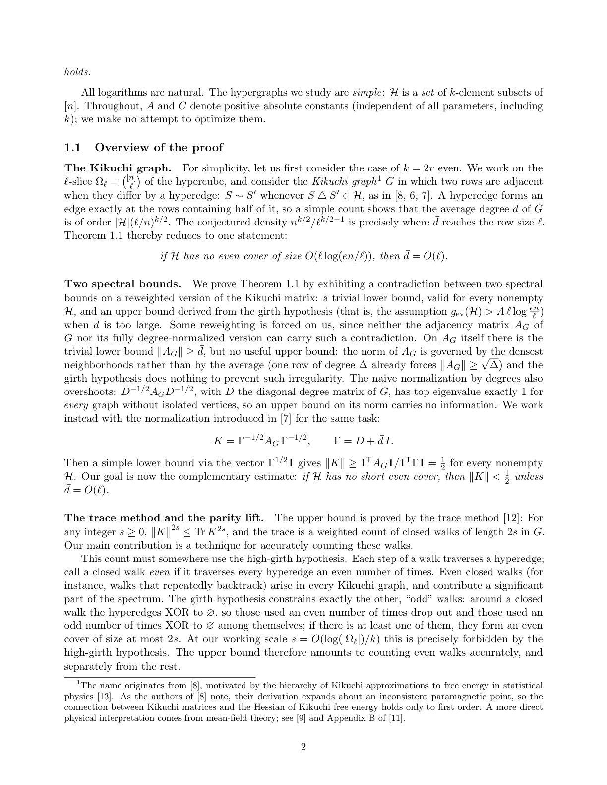
<figcaption class="paper-figure-caption"><b>Fig 1.</b> Low-resolution page preview, page 2</figcaption>
</figure>
<figure class="paper-figure-card">
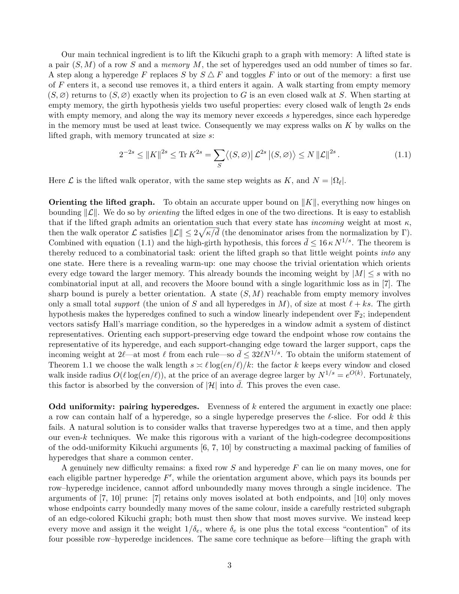
<figcaption class="paper-figure-caption"><b>Fig 2.</b> Low-resolution page preview, page 3</figcaption>
</figure>
<figure class="paper-figure-card">
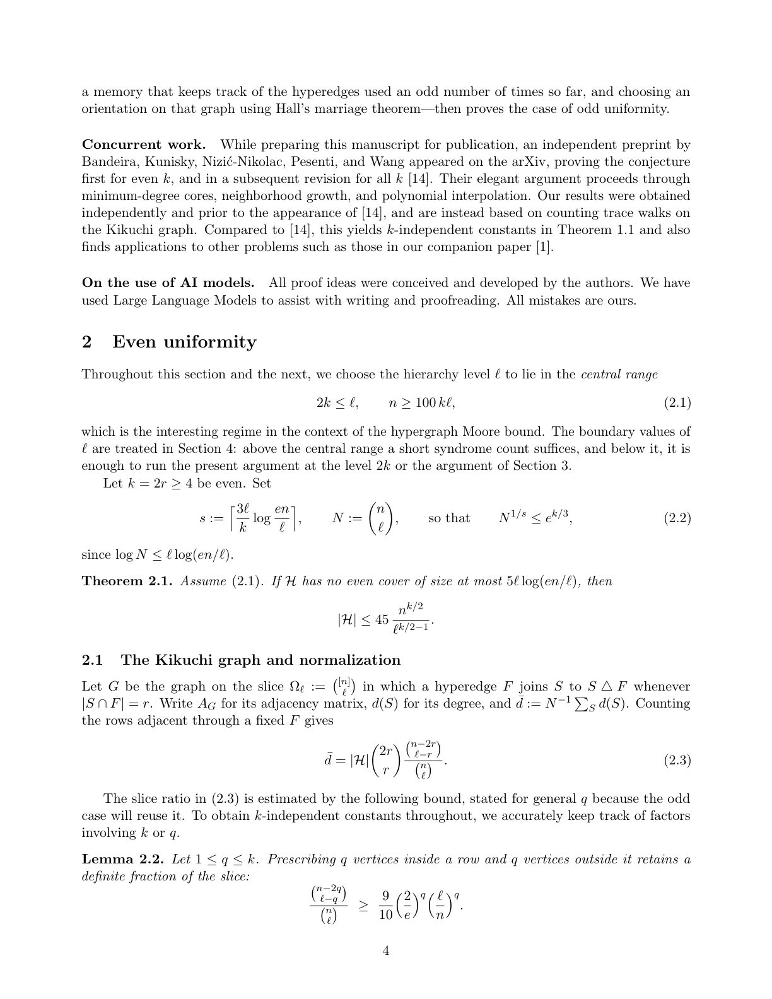
<figcaption class="paper-figure-caption"><b>Fig 3.</b> Low-resolution page preview, page 4</figcaption>
</figure>
<figure class="paper-figure-card">
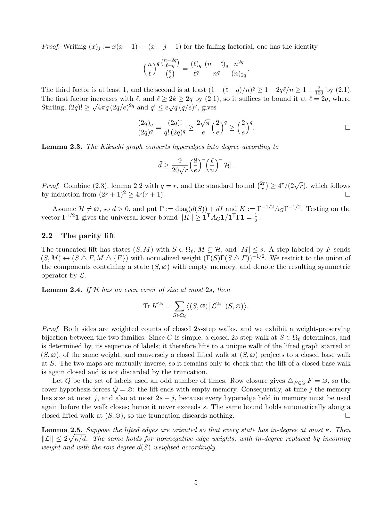
<figcaption class="paper-figure-caption"><b>Fig 4.</b> Low-resolution page preview, page 5</figcaption>
</figure>
<figure class="paper-figure-card">
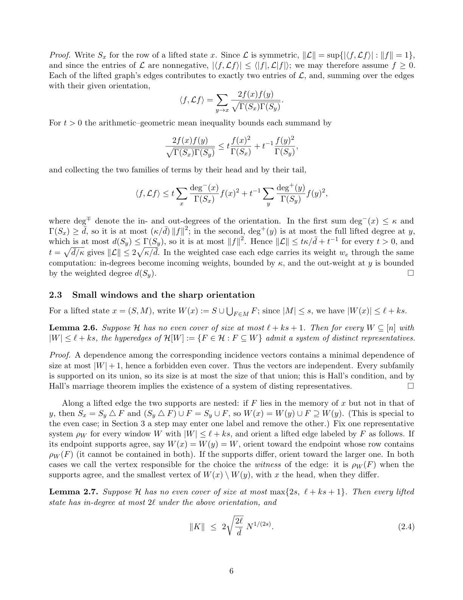
<figcaption class="paper-figure-caption"><b>Fig 5.</b> Low-resolution page preview, page 6</figcaption>
</figure>
</div>
<p><strong>Summary.</strong> This paper provides a rigorous spectral proof of the Hypergraph Moore Bound conjecture. It uses advanced linear algebra and graph theory tools—specifically analyzing weighted, memory-augmented graphs derived from hypergraphs—to relate the density of edges to the minimum size of an 'even cover.' The result establishes fundamental combinatorial bounds applicable across various dimensions.</p>
<p><strong>Why it may be interesting.</strong> While purely combinatorial/graph theoretical, the reliance on spectral methods (eigenvalues, walk counting) applied to structured matrices shares deep mathematical parallels with techniques used in quantum information theory for analyzing entanglement or graph properties via adjacency operators.</p>
<details>
<summary>Detailed structure</summary>
<p><strong>Main problem.</strong> The paper aims to prove Feige's conjecture on the hypergraph Moore bound, establishing absolute constants for the size of an even cover in a $k$-uniform hypergraph.</p>
<p><strong>Main result.</strong> It proves that any sufficiently dense $k$-uniform hypergraph must contain an even cover whose size is bounded by $A\ell\log(en/\ell)$, or alternatively, the number of hyperedges must be below a specific threshold dependent on $n, k,$ and $\ell$.</p>
<p><strong>Method.</strong> The proof employs advanced spectral graph theory techniques applied to specialized matrices (Kikuchi matrices) derived from lifting the hypergraph structure into a memory-augmented graph. It uses trace methods and walk counting arguments.</p>
<p><strong>Model / system.</strong> The mathematical model is an abstract $k$-uniform hypergraph $H$ on $n$ vertices, analyzed via its associated Kikuchi graph defined on an $\ell$-slice of the hypercube. The analysis involves constructing a 'lifted graph with memory' to track parity constraints.</p>
<p><strong>Key observables.</strong> Minimum size of an even cover ($   ext{gev}(H)$), average degree ($ar{d}$) of the associated Kikuchi graph, and spectral norms of derived operators ($K$ or $L$).</p>
<p><strong>Important parameters / regimes.</strong> The uniformity $k$, number of vertices $n$, hierarchy level $\ell$, and parameters $A$ and $C$ defining the bounds.</p>
<p><strong>Assumptions / limitations.</strong> The proof relies on assuming no small even cover exists to derive spectral bounds, and it handles technical difficulties for odd vs. even uniformity using specific weighting schemes ($\delta_e$).</p>
<p><strong>Paper structure.</strong> The paper develops the argument by first defining the problem via spectral analysis of the Kikuchi graph, then tackling the even and odd uniformity cases separately, establishing bounds on $ar{d}$ based on the non-existence of small even covers, and finally combining these results to prove the main theorem.</p>
</details>
<details>
<summary>Abstract</summary>
<p>A nonempty subfamily of a $k$-uniform hypergraph is an \emph{even cover} if every vertex lies in an even number of its hyperedges; for $k=2$ these are edge-disjoint unions of cycles, so the minimum size of an even cover is the natural hypergraph analogue of girth. We prove Feige's 2008 conjecture on the hypergraph Moore bound: there are absolute constants $A$ and $C$ (independent of $k$) such that for every $k\ge3$ and every $1\le\ell\le n$, any $k$-uniform hypergraph on $n$ vertices with more than $C\,n^{k/2}/\ell^{k/2-1}$ hyperedges contains an even cover of size at most $A\,\ell\log(en/\ell)$. Our proof is based on sharp spectral bounds for Kikuchi matrices, which we expect to be of independent interest; we apply them to the refutation of random constraint satisfaction problems in a companion paper.</p>
</details>
<p><sub><a href="#top">↑ back to top</a></sub></p>

<p><a id="paper-2607.25805"></a></p>
<h3 id="on-some-potentials-based-on-exponential-functions"><a href="http://arxiv.org/abs/2607.25805v1">On some potentials based on exponential functions</a></h3>
<p><strong>Authors:</strong> Francisco M. Fernández<br>
<strong>Type:</strong> theory · <strong>Category:</strong> other · <strong>PDF:</strong> <a href="https://arxiv.org/pdf/2607.25805v1">https://arxiv.org/pdf/2607.25805v1</a><br>
<strong>Analysis basis:</strong> full PDF text, analyzed in chunks</p>
<div class="figure-strip-hint">↔ Scroll figures horizontally</div>
<div class="paper-figures-scroll">
<figure class="paper-figure-card">
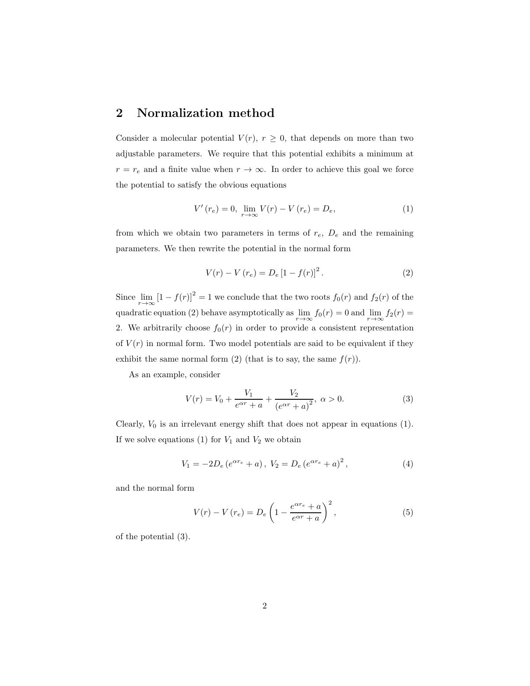
<figcaption class="paper-figure-caption"><b>Fig 1.</b> Low-resolution page preview, page 2</figcaption>
</figure>
<figure class="paper-figure-card">
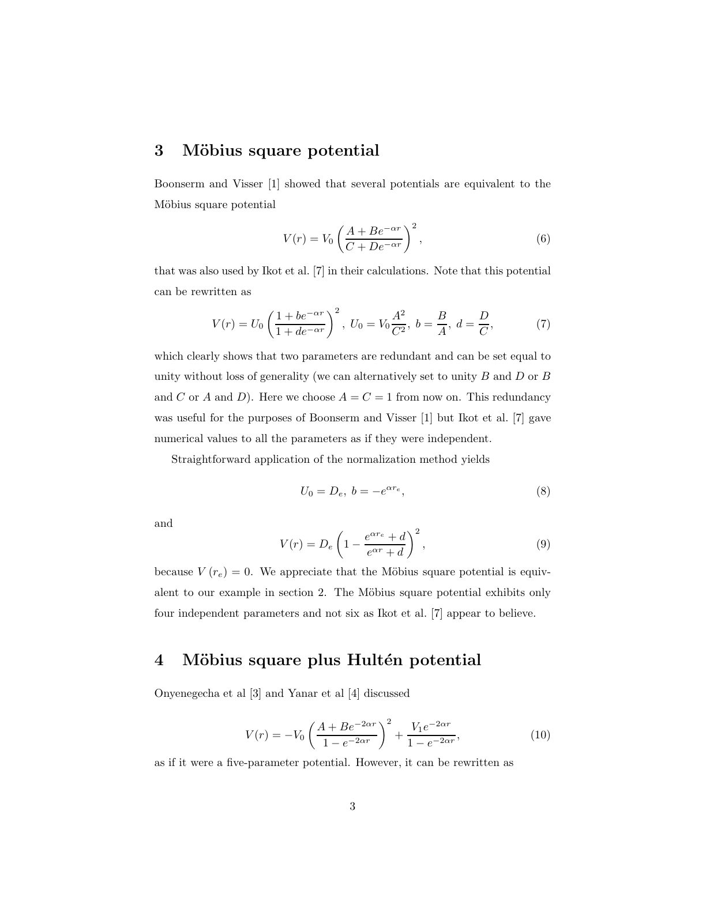
<figcaption class="paper-figure-caption"><b>Fig 2.</b> Low-resolution page preview, page 3</figcaption>
</figure>
<figure class="paper-figure-card">
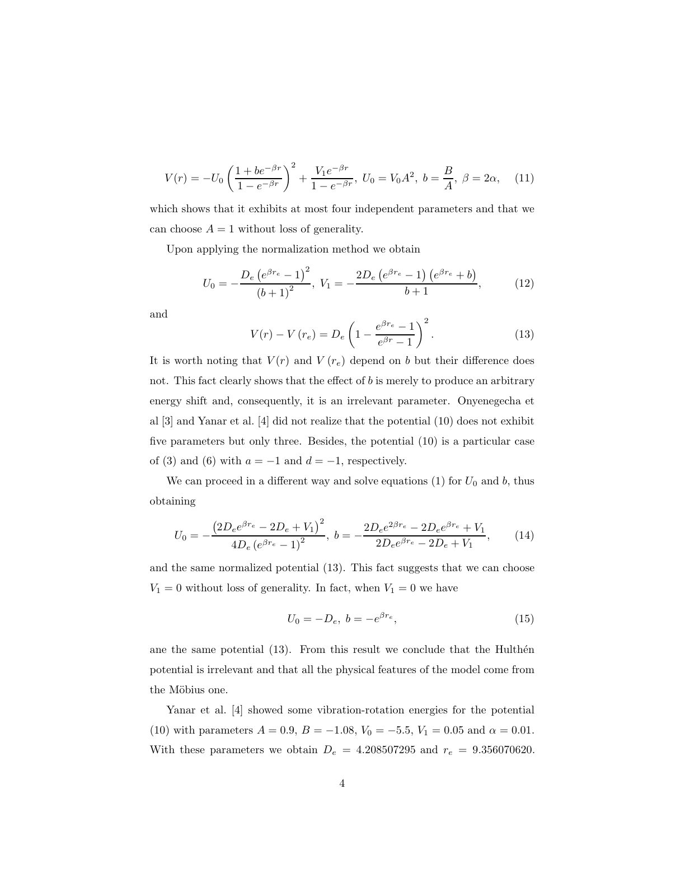
<figcaption class="paper-figure-caption"><b>Fig 3.</b> Low-resolution page preview, page 4</figcaption>
</figure>
<figure class="paper-figure-card">
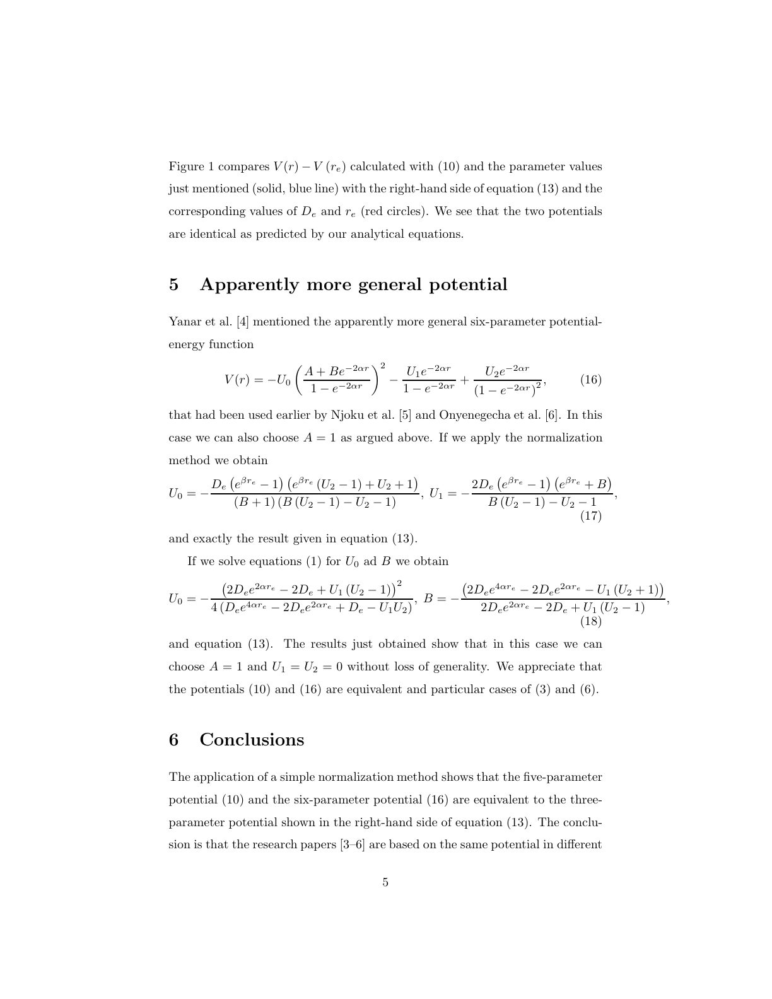
<figcaption class="paper-figure-caption"><b>Fig 4.</b> Low-resolution page preview, page 5</figcaption>
</figure>
<figure class="paper-figure-card">
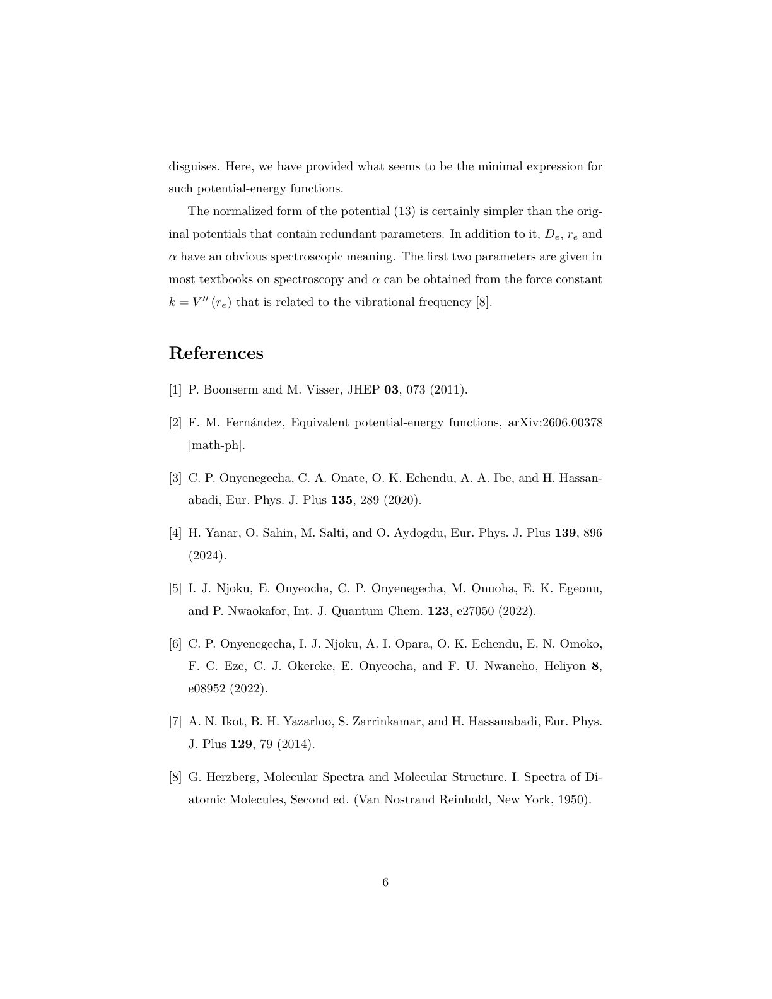
<figcaption class="paper-figure-caption"><b>Fig 5.</b> Low-resolution page preview, page 6</figcaption>
</figure>
</div>
<p><strong>Summary.</strong> This paper introduces a systematic normalization method to prove the mathematical equivalence of several different potentials derived from exponential functions. By enforcing specific boundary conditions (minimum at $r_e$, finite limit at infinity), the authors show that complex, multi-parameter models collapse into a single, minimal functional form. This suggests significant redundancy in how molecular interaction potentials have been parameterized in previous research.</p>
<p><strong>Why it may be interesting.</strong> This work provides powerful mathematical tools for analyzing molecular interactions, suggesting that physical complexity can often be reduced to simpler underlying functional dependencies, which is crucial for modeling bond energies and scattering processes in AMO physics.</p>
<details>
<summary>Detailed structure</summary>
<p><strong>Main problem.</strong> To demonstrate that various molecular potentials based on exponential functions are mathematically equivalent.</p>
<p><strong>Main result.</strong> The authors show that several complex, seemingly distinct potentials (five-parameter and six-parameter models) reduce to a single, minimal functional form dependent on only three independent parameters.</p>
<p><strong>Method.</strong> A systematic normalization method is employed, requiring the potential to have a minimum and be finite at infinity. This leads to rewriting the potential into a 'normal form' defined by sharing the same function $f(r)$.</p>
<p><strong>Model / system.</strong> The study focuses on molecular potentials $V(r)$ used in quantum mechanics, specifically analyzing models like the Möbius-square potential and generalized exponential forms.</p>
<p><strong>Key observables.</strong> Dissociation energy ($D_e$), equilibrium distance ($r_e$), and force constant ($k = V''(r_e)$).</p>
<p><strong>Important parameters / regimes.</strong> $D_e$, $r_e$, $\alpha$ (related to the force constant).</p>
<p><strong>Assumptions / limitations.</strong> The potential must exhibit a minimum at some finite distance $r_e$ and approach a finite value as the radial variable $r 	o \infty$.</p>
<p><strong>Figures summary.</strong> Figure 1 compares the potential calculated using one specific model (Eq. 10) against the derived normal form equation (Eq. 13), confirming their mathematical identity.</p>
<p><strong>Paper structure.</strong> The paper introduces the systematic normalization method, applies it to known potentials like the Möbius-square and five/six-parameter models, demonstrates the reduction of these complex forms to a minimal three-parameter structure, and concludes by showing parameter redundancy in previous literature.</p>
</details>
<details>
<summary>Abstract</summary>
<p>By means of a simple and systematic normalization method we show that some apparently different potentials based on exponential functions are equivalent. Present normalization method only requires that the potential exhibits a minimum and is finite when the radial variable tends to infinity.</p>
</details>
<p><sub><a href="#top">↑ back to top</a></sub></p>

<p><a id="paper-2607.25812"></a></p>
<h3 id="optimal-quantum-eigenvalue-transformation-via-linear-combinations-of-hermitian-matrices"><a href="http://arxiv.org/abs/2607.25812v1">Optimal Quantum Eigenvalue Transformation via Linear Combinations of Hermitian Matrices</a></h3>
<p><strong>Authors:</strong> Yanqiao Wang, Yixuan Liang, Hongjia Chen, Jin-Peng Liu<br>
<strong>Type:</strong> theory · <strong>Category:</strong> quantum information and computing · <strong>PDF:</strong> <a href="https://arxiv.org/pdf/2607.25812v1">https://arxiv.org/pdf/2607.25812v1</a><br>
<strong>Analysis basis:</strong> full PDF text, analyzed in chunks</p>
<div class="figure-strip-hint">↔ Scroll figures horizontally</div>
<div class="paper-figures-scroll">
<figure class="paper-figure-card">
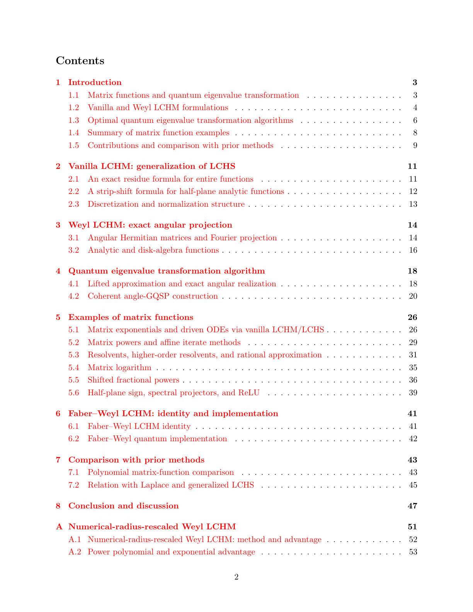
<figcaption class="paper-figure-caption"><b>Fig 1.</b> Low-resolution page preview, page 2</figcaption>
</figure>
<figure class="paper-figure-card">
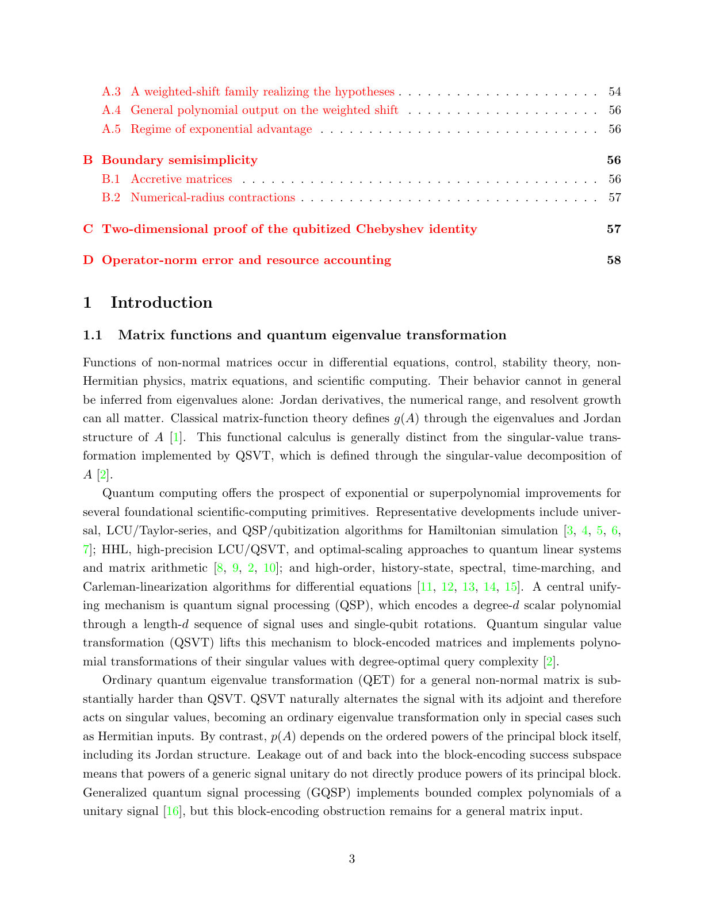
<figcaption class="paper-figure-caption"><b>Fig 2.</b> Low-resolution page preview, page 3</figcaption>
</figure>
<figure class="paper-figure-card">
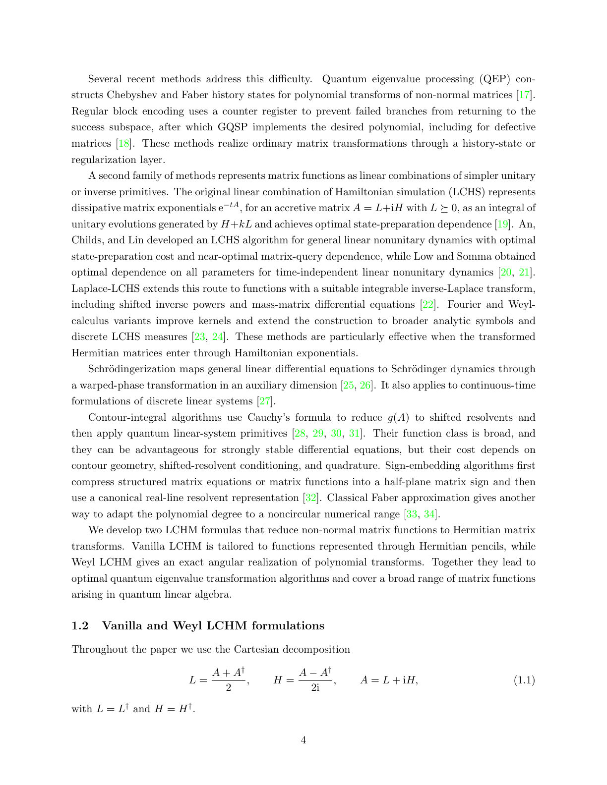
<figcaption class="paper-figure-caption"><b>Fig 3.</b> Low-resolution page preview, page 4</figcaption>
</figure>
<figure class="paper-figure-card">
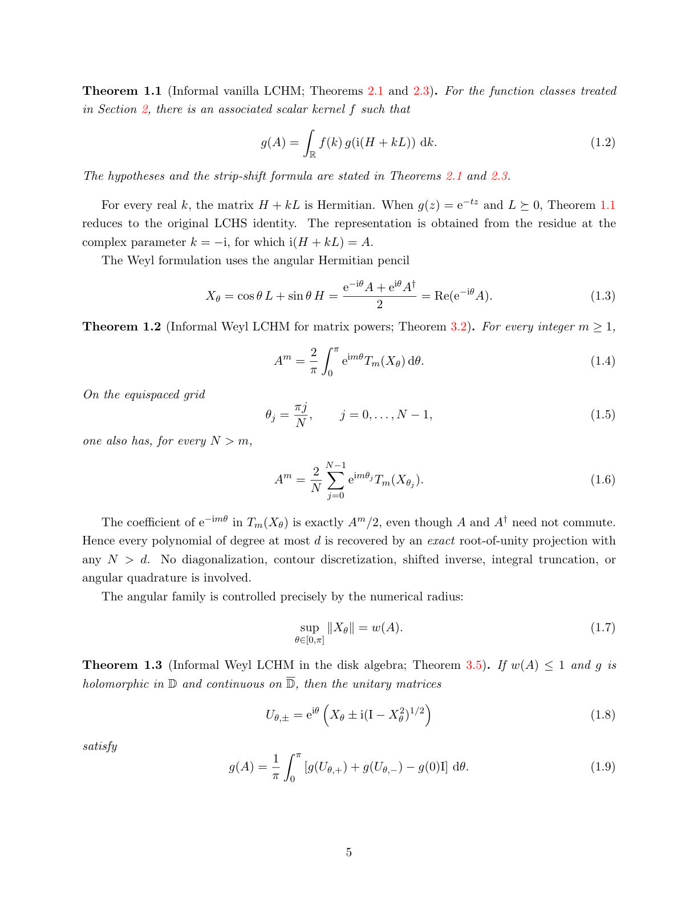
<figcaption class="paper-figure-caption"><b>Fig 4.</b> Low-resolution page preview, page 5</figcaption>
</figure>
<figure class="paper-figure-card">
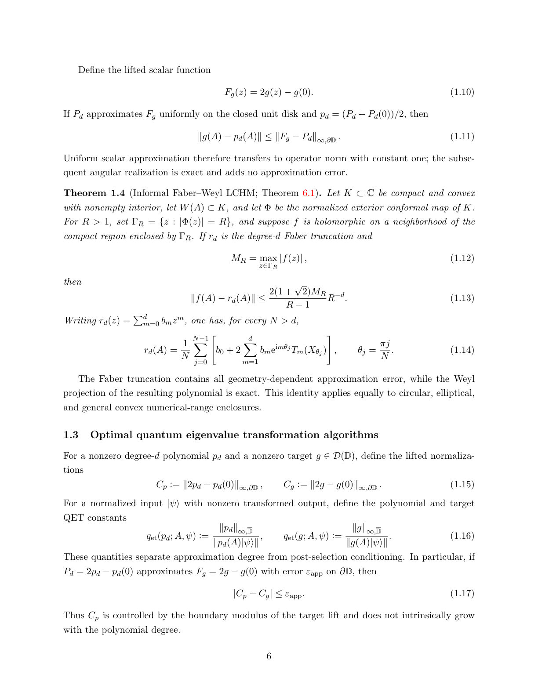
<figcaption class="paper-figure-caption"><b>Fig 5.</b> Low-resolution page preview, page 6</figcaption>
</figure>
</div>
<p><strong>Summary.</strong> This paper introduces Linear Combination of Hermitian Matrices (LCHM) formulations to efficiently compute functions of general, non-normal matrices $g(A)$ in the quantum domain. By developing both Vanilla and Weyl LCHM methods, the authors achieve optimal circuit depth for various quantum linear algebraic tasks. This work provides a powerful theoretical framework for advancing quantum simulation beyond standard Hermitian models.</p>
<p><strong>Why it may be interesting.</strong> The development of robust, near-optimal quantum linear algebra tools like LCHM is crucial for implementing complex quantum simulations involving non-Hermitian Hamiltonians or time evolution operators that cannot be easily mapped to standard Hermitian forms.</p>
<details>
<summary>Detailed structure</summary>
<p><strong>Main problem.</strong> The central problem is developing optimal quantum eigenvalue transformation (QET) algorithms for general non-normal matrices, which surpasses the capabilities of standard singular value transformations.</p>
<p><strong>Main result.</strong> The paper introduces Linear Combination of Hermitian Matrices (LCHM) formulations that achieve near-optimal circuit depth ($\Theta(d)$) and provide exact discrete formulas for matrix powers using Fourier projection techniques.</p>
<p><strong>Method.</strong> Two complementary LCHM methods—Vanilla and Weyl—are developed to map the general non-normal function $g(A)$ onto integrals or sums involving Hermitian matrices. These are then implemented into quantum circuits achieving optimal gate complexity.</p>
<p><strong>Model / system.</strong> The theory applies to computing functions $g(A)$ of a general matrix $A$, where $A$ is decomposed using its Hermitian and anti-Hermitian parts ($L, H$). The analysis often uses weighted-shift matrices as test cases to prove quantum advantage.</p>
<p><strong>Key observables.</strong> Quantum query complexity, circuit depth ($\Theta(d)$), post-selection repetition count, and operator-norm error bounds ($\epsilon_{	ext{circ}}, \epsilon_{	ext{app}}$).</p>
<p><strong>Important parameters / regimes.</strong> The degree of the polynomial ($d$), the numerical radius $w(A)$, and approximation parameters like $\epsilon$ or sampling size $N$.</p>
<p><strong>Assumptions / limitations.</strong> The methods rely on decomposing $A$ into Hermitian components and assume conditions (like a uniform numerical-radius gap) are met to demonstrate exponential quantum advantage.</p>
<p><strong>Paper structure.</strong> The paper progresses by first establishing the mathematical necessity of LCHM over standard techniques, detailing the Vanilla and Weyl formulations for $g(A)$, deriving exact discrete formulas (e.g., for $A^m$), and concluding with the complexity analysis of the resulting QET algorithms.</p>
</details>
<details>
<summary>Abstract</summary>
<p>We discover two complementary linear-combination-of-Hermitian-matrices (LCHM) formulations to achieve a general non-normal matrix eigenvalue transformation $g(A)$. Firstly, for $A=L+\mathrm{i} H$ with Hermitian $L$ and $H$, the vanilla LCHM formula represents $g(A)$ as a kernel integral of $g(\mathrm{i}(H+kL))$, and it contains linear-combination-of-Hamiltonian-simulation (LCHS) [An, Liu, Lin, Phys. Rev. Lett. 2023] as the special case for matrix exponentials. Secondly, for the angular Hermitian $X_θ= \cosθL+\sinθH$, the Weyl LCHM formula expresses $g(A)$ via integrating $g(\mathrm{e}^{\mathrm{i}θ} (X_θ\pm\mathrm{i}(I-X_θ^2)^{1/2}))$. For the matrix power $g(A)=A^m$, the Fourier projection of Weyl LCHM gives \[ A^m=\frac{2}π\int_0^π\text{e}^{\text{i} mθ}T_m(X_θ) \text{d}θ= \frac{2}{N}\sum_{j=0}^{N-1} \text{e}^{\text{i} mθ_j}T_m(X_{θ_j}),\quadθ_j=\frac{πj}{N},\quad \text{for every } N>m \] with Chebyshev polynomial of Hermitian $T_m(X_θ)$ and $N$ samples. The discrete formula is exact, introduces no truncation and angular quadrature error, and offers $\mathcal{O}(1)$ post-selection weights.   LCHM formulas lead to new quantum eigenvalue transformation (QET) algorithms. For a degree-$d$ polynomial $p_d(A)$ on $|ψ\rangle$, our QET algorithm can achieve optimal $Θ(d)$ circuit depth and optimal $\mathcal{O}(||p_d||_{\infty}/||p_d(A)|ψ\rangle||)$ post-selection repetitions. LCHM-based QETs unify various quantum linear algebraic problems with near-optimal $\mathcal{\widetilde O}(d\log(d/ε))$ Clifford$+T$ gates, including driven ODEs (reduced to standard LCHS), iterative methods, resolvents, $\log(I+A)$, $(λI+A)^ν$, Sign and ReLU transforms, and Faber approximation on noncircular domains.</p>
</details>
<p><sub><a href="#top">↑ back to top</a></sub></p>

<p><a id="paper-2607.25437"></a></p>
<h3 id="repositories-contributors-and-continuity-an-empirical-study-of-foundational-quantum-software"><a href="http://arxiv.org/abs/2607.25437v1">Repositories, Contributors, and Continuity: An Empirical Study of Foundational Quantum Software</a></h3>
<p><strong>Authors:</strong> Vincent Gierisch, Nicole Hoess, Ralf Ramsauer, Wolfgang Mauerer<br>
<strong>Type:</strong> experiment · <strong>Category:</strong> other · <strong>PDF:</strong> <a href="https://arxiv.org/pdf/2607.25437v1">https://arxiv.org/pdf/2607.25437v1</a><br>
<strong>Analysis basis:</strong> full PDF text, analyzed in chunks</p>
<div class="figure-strip-hint">↔ Scroll figures horizontally</div>
<div class="paper-figures-scroll">
<figure class="paper-figure-card">
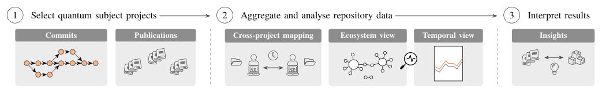
<figcaption class="paper-figure-caption"><b>Fig 1.</b> Fig. 1. Overview of the analysis workflow. We first relate quantum software repositories to associated publications and derive repository-level observations from the development history. We then map contributor identities across repositories and construct complementary ecosystem and temporal views to capture relations and evolution beyond individual projects. This allows for analysing activity, contributor dynamics, and the continuation of concepts in the ecosystem.</figcaption>
</figure>
<figure class="paper-figure-card">
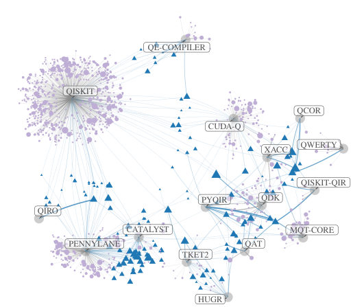
<figcaption class="paper-figure-caption"><b>Fig 2.</b> Fig. 2. Overview of the quantum software ecosystem with projects (grey nodes) and contributors (blue nodes and edges for developers contributing to multiple projects; lilac nodes and edges for developers contributing to a single project). Developer nodes are scaled by their total commits across the entire ecosystem. Edge widths indicate the share of commits (effort) a developer contributed to the specific project during their active months.</figcaption>
</figure>
<figure class="paper-figure-card">
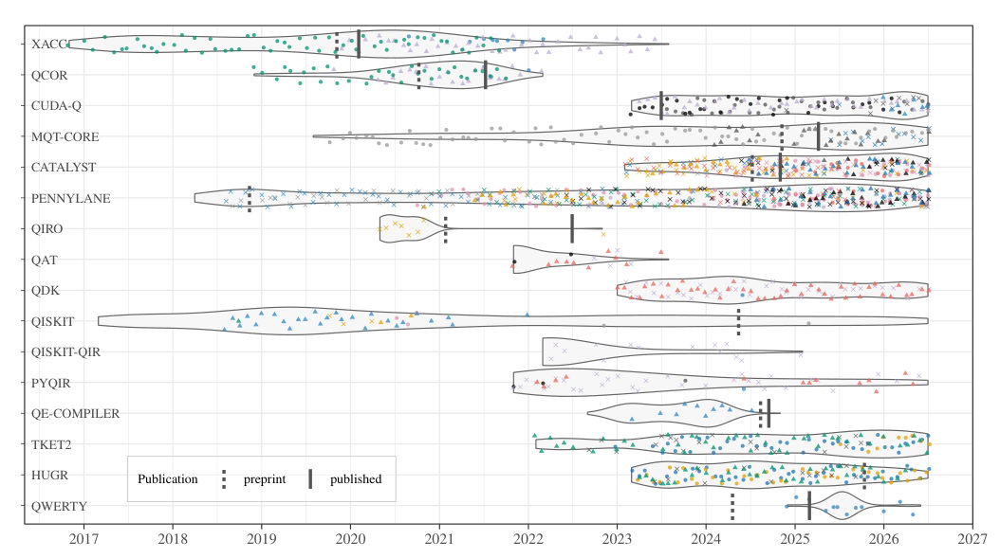
<figcaption class="paper-figure-caption"><b>Fig 3.</b> Fig. 3. Contribution activity over time. Violins show the overall commit distribution per project. Coloured points mark the top 20% (24 of 118 cross-project) contributors by total commits. Each of the colour–shape combinations denotes a single developer, allowing the same contributor to be traced across projects.</figcaption>
</figure>
</div>
<p><strong>Summary.</strong> This paper empirically analyzes the structure of the quantum software ecosystem by tracking developer contributions across multiple foundational repositories. Using software engineering techniques, it maps out how expertise flows between projects over time. The findings demonstrate that knowledge transfer is a key feature of this rapidly growing field, suggesting concepts persist even when individual project activity wanes.</p>
<p><strong>Why it may be interesting.</strong> While not directly focused on physical models, understanding the infrastructure and community dynamics supporting quantum software is crucial for any theoretical physicist needing to implement or test complex algorithms in practice.</p>
<details>
<summary>Detailed structure</summary>
<p><strong>Main problem.</strong> The study investigates whether scientific concepts and development influence persist across the boundaries of individual software repositories within the rapidly expanding quantum software ecosystem.</p>
<p><strong>Main result.</strong> Knowledge transfer is evident through developer migration patterns, suggesting that expertise often moves across repository boundaries rather than being confined to a single project.</p>
<p><strong>Method.</strong> The authors applied empirical software engineering techniques by analyzing Git commit data and cross-repository contributions to map community evolution.</p>
<p><strong>Model / system.</strong> The system analyzed is the quantum software ecosystem itself, modeled as a network of interconnected repositories (projects) and developers who contribute code across them.</p>
<p><strong>Key observables.</strong> Contributor migration patterns, cross-project knowledge transfer indications, developer roles (Exclusive vs. Cross-Project; Core vs. Peripheral), and temporal contribution activity.</p>
<p><strong>Important parameters / regimes.</strong> Commit count per developer/project/day, time elapsed between contributions in different projects.</p>
<p><strong>Assumptions / limitations.</strong> The analysis assumes that knowledge transfer occurs primarily through the direct, measurable activity of individual developers moving between projects.</p>
<p><strong>Figures summary.</strong> Figures illustrate the workflow from publications to repository mapping, show the overall ecosystem network linking developers and projects, and display contribution activity over time tracing top contributors across multiple repositories.</p>
<p><strong>Paper structure.</strong> The paper follows a structure involving defining the problem (concept persistence), detailing the multi-stage MSR pipeline (selection $
ightarrow$ extraction $
ightarrow$ mapping $
ightarrow$ networking $
ightarrow$ temporal analysis), presenting empirical evidence of developer roles and migration, and concluding with observed development paths.</p>
</details>
<details>
<summary>Abstract</summary>
<p>Driven by contributions from academia, industry, and open-source communities, the quantum software ecosystem is rapidly growing. Across this ecosystem, new concepts often emerge through software artefacts accompanying scientific publications as well as through sustained development in larger communities. However, many repositories receive development efforts only over a limited period of time, raising the question whether their concepts persist beyond individual repositories. In this paper, we apply established empirical software engineering techniques to analyse a set of foundational quantum software repositories. We combine cross-repository activity with contributor relationships to study the evolution of communities. Our analysis provides empirical evidence of contributor migration patterns and indications of cross-project knowledge transfer. We observe multiple development paths: projects may evolve into sustained communities, contributors may integrate concepts into established ecosystems, or activity may continue through new and follow-up software artefacts. Our observations provide an initial empirical perspective on how concepts and influence persist across repository boundaries in quantum software ecosystems.</p>
</details>
<p><sub><a href="#top">↑ back to top</a></sub></p>

<p><a id="paper-2607.25245"></a></p>
<h3 id="structured-high-angular-momentum-coulomb-tensors-from-real-and-complex-solid-harmonic-integral-engines-a-perspective"><a href="http://arxiv.org/abs/2607.25245v1">Structured High-Angular-Momentum Coulomb Tensors from Real and Complex Solid-Harmonic Integral Engines: A Perspective</a></h3>
<p><strong>Authors:</strong> Bo Peng<br>
<strong>Type:</strong> theory · <strong>Category:</strong> strongly correlated electrons · <strong>PDF:</strong> <a href="https://arxiv.org/pdf/2607.25245v1">https://arxiv.org/pdf/2607.25245v1</a><br>
<strong>Analysis basis:</strong> full PDF text, analyzed in chunks</p>
<div class="figure-strip-hint">↔ Scroll figures horizontally</div>
<div class="paper-figures-scroll">
<figure class="paper-figure-card">
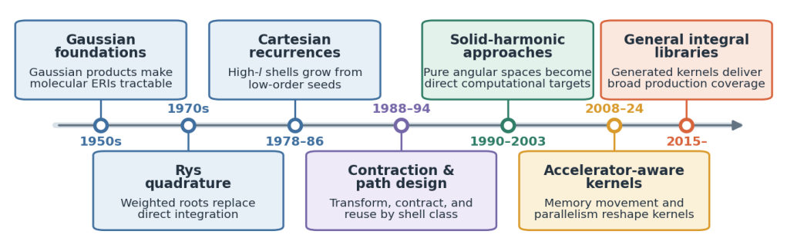
<figcaption class="paper-figure-caption"><b>Fig 1.</b> FIG. 1. Seven decades of ERI design, from tractability to representation awareness. Successive methods redistributed numerical work, reusable quantities, angular handling, and hardware constraints across integral evaluation. These method families now coexist, while the direct solid-harmonic route makes angular representation explicit for downstream tensor algorithms.</figcaption>
</figure>
<figure class="paper-figure-card">
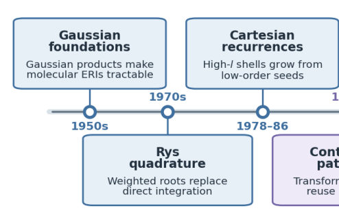
<figcaption class="paper-figure-caption"><b>Fig 2.</b> Figure 1 summarizes this cumulative development, in which different methods move different parts of the work. Across this history, angular representation determines the mathematical language used to describe the shape of a basis function. Cartesian Gaussian functions use pow- ers of x, y, and z. For example, the six Cartesian d func- tions can be associated with x2, y2, z2, xy, xz, and yz. This language is convenient because the three coordinate directions can be handled separately. Spherical functions instead describe pure angular momentum.18,20,21,32 Real spherical functions are often convenient in nonrelativistic molecular calculations because the orbitals and integrals can remain real....</figcaption>
</figure>
<figure class="paper-figure-card">
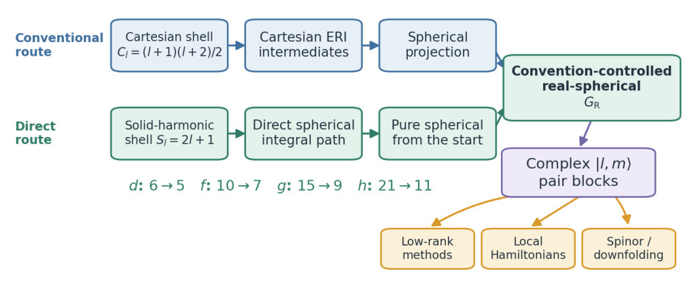
<figcaption class="paper-figure-caption"><b>Fig 3.</b> FIG. 2. Two routes to the same spherical Coulomb tensor. The difference is when redundant Cartesian angular structure is removed. The conventional route projects to the real-spherical basis after integral formation, whereas the direct route works in the target shell dimension from the start. A phase- and ordering-controlled real-to-complex transformation then exposes |l, m⟩ pair blocks for low-rank, local-Hamiltonian, and spinor or downfolding applications.</figcaption>
</figure>
<figure class="paper-figure-card">

<figcaption class="paper-figure-caption"><b>Fig 4.</b> FIG. 3. Four ratios determined by angular representation for equal-l shells from d through h. Panel (a) shows the percentage reduction in final spherical versus Cartesian tensor entries. Panel (b) shows the percentage of complex-spherical entries that satisfy the total-M rule. Panel (c) compares the number of independent Slater–Condon radial parameters with the number of entries in the full spherical tensor. It counts independent inputs rather than retained tensor entries. Panel (d) compares a rough operation count for blockwise pair-space updates with the corresponding dense count. Together, the panels isolate representation effects from implementation-dependent timing.</figcaption>
</figure>
<figure class="paper-figure-card">

<figcaption class="paper-figure-caption"><b>Fig 5.</b> FIG. 4. Coulomb matrices in pair space for one-center d, f, g, and h shells before and after the reversible real-to-complex spherical transformation. Pair states are sorted by total magnetic quantum number M. In the real-spherical basis, nonzero entries are spread across the matrices. In the complex |l, m⟩basis, they collect into the blocks required by m1 +m2 = m3 +m4. Color shows the base-10 logarithm of each magnitude relative to the largest entry in that matrix. In a molecule, coupling between different blocks would appear as measurable intensity outside the bright block pattern.</figcaption>
</figure>
</div>
<p><strong>Summary.</strong> This work introduces solid-harmonic integral engines to revolutionize the calculation of electron-repulsion integrals in electronic structure theory. By working directly in spherical coordinates, these engines generate smaller, more structured Coulomb tensors than traditional methods. This structural preservation capability creates a vital link between efficient integral generation and complex many-electron algorithms.</p>
<p><strong>Why it may be interesting.</strong> The emphasis on preserving angular structure metadata through computation is crucial for any advanced quantum simulation or correlated electron calculation that must map atomic physics onto abstract computational bases (like qubits).</p>
<details>
<summary>Detailed structure</summary>
<p><strong>Main problem.</strong> The primary challenge is efficiently calculating electron-repulsion integrals (ERIs) for electronic structure theory, which are computationally intensive.</p>
<p><strong>Main result.</strong> Solid-harmonic integral engines working directly in the spherical basis produce a significantly smaller and more structured Coulomb tensor compared to traditional Cartesian methods. This provides a direct bridge between efficient integral generation and subsequent many-electron computations.</p>
<p><strong>Method.</strong> The paper proposes using 'direct real or complex solid-harmonic integral engines' that operate natively in the target spherical angular space, bypassing large intermediate tensors generated by standard Gaussian basis function transformations from Cartesian coordinates.</p>
<p><strong>Model / system.</strong> The model is the Coulomb interaction between charge distributions built from orbital basis functions (Gaussian type orbitals), relevant for calculating electronic structure in atoms and molecules. The focus is on managing the tensor representation of these two-electron interactions.</p>
<p><strong>Key observables.</strong> Final Coulomb tensor size, angular block counts, radial Slater--Condon parameters, and pair-space organization, all quantified relative to Cartesian representations.</p>
<p><strong>Important parameters / regimes.</strong> Angular momentum quantum numbers ($l$), magnetic quantum numbers ($m$), and the ratio of spherical to Cartesian tensor entries ($R_{	ext{tensor}}(l)$).</p>
<p><strong>Assumptions / limitations.</strong> The analysis assumes ideal one-center shells for deriving structural rules, though it acknowledges that molecular environments can break perfect rotational symmetry.</p>
<p><strong>Figures summary.</strong> Figure 1 summarizes the history of ERI design across different computational methods. Figure 2 illustrates the data path connecting integral generation to low-rank preprocessing and model transformations, highlighting structure preservation.</p>
<p><strong>Paper structure.</strong> The paper progresses from identifying the bottleneck in traditional Cartesian ERI calculation (generating overly large intermediate tensors) to introducing solid-harmonic engines that work directly in spherical space. It then quantifies the structural advantages using symmetry rules (Total-M rule, radial parameters) and concludes by showing how this structured output supports downstream algorithms like low-rank factorization and spinor transformations.</p>
</details>
<details>
<summary>Abstract</summary>
<p>Electron-repulsion integrals describe the Coulomb interaction between charge distributions built from orbital basis functions. Most integral algorithms generate these quantities through Cartesian Gaussian functions, whose angular shapes are written as powers of $x$, $y$, and $z$, and then transform the result to spherical functions. This route is effective, but from $d$ shells onward the Cartesian representation contains more functions than the spherical space required by the calculation. Direct real or complex solid-harmonic engines work in that target space from the beginning. They therefore produce a smaller final Coulomb tensor while preserving the ordering, phase, and magnetic-quantum-number labels that describe its angular structure. Following this structure beyond integral evaluation reveals direct connections to the algorithms that use the tensor. Simple analytical counts quantify tensor size, angular blocks, radial Slater--Condon parameters, and pair-space work. These quantities guide low-rank factorization, local Hamiltonian construction, quantum simulation, and transformations to spinor or effective-model bases. In this way, solid-harmonic integral engines provide a direct bridge between efficient integral generation and structured many-electron computation.</p>
</details>
<p><sub><a href="#top">↑ back to top</a></sub></p>
</details>
<h2 id="secondary-cond-mat-archives">Secondary cond-mat archives</h2>
<p><em>Papers from cond-mat.mtrl-sci, mes-hall, other, soft, supr-con. These archives are de-prioritized — they appear at the end regardless of relevance score.</em></p>
<h3 id="relevant-in-secondary-archives-16">Relevant in secondary archives (16)</h3>

<p><a id="paper-2607.25809"></a></p>
<h3 id="programmable-bulk-topological-channels-via-strain-engineering"><a href="http://arxiv.org/abs/2607.25809v1">Programmable Bulk Topological Channels via Strain Engineering</a></h3>
<p><strong>Authors:</strong> Jiawei Xia, Shuze Zhu<br>
<strong>Type:</strong> theory · <strong>Category:</strong> other · <strong>PDF:</strong> <a href="https://arxiv.org/pdf/2607.25809v1">https://arxiv.org/pdf/2607.25809v1</a><br>
<strong>Analysis basis:</strong> full PDF text, analyzed in chunks
<strong>Topic relevance:</strong> 🔥 <code>analog quantum simulation</code> <strong>4/5</strong> · <code>driven-dissipative phase transition</code> <strong>3/5</strong> · <code>methods for driven-dissipative</code> <strong>3/5</strong> · <code>non-equilibrium dynamics</code> <strong>3/5</strong> · <code>non-equilibrium universality</code> <strong>2/5</strong> · <code>spintronics-quantum-optics interface</code> <strong>2/5</strong> · <code>Frenkel-Kontorova</code> <strong>1/5</strong> · <code>Keldysh / 2PI / non-Gaussian methods</code> <strong>1/5</strong> · <code>correlated / nonlocal dissipation</code> <strong>1/5</strong> · <code>exotic spin models in light-matter</code> <strong>1/5</strong> · <code>interference shaping light</code> <strong>1/5</strong></p>
<div class="figure-strip-hint">↔ Scroll figures horizontally</div>
<div class="paper-figures-scroll">
<figure class="paper-figure-card">

<figcaption class="paper-figure-caption"><b>Fig 1.</b> FIG.1. Uniform-strain-induced topological phase transition in the Haldane model. (a) Schematic of the Haldane lattice. Filled (open) circles denote A (B) sublattices. Red parallelogram marks the unit cell, and clockwise arrows indicate the positive direction of the complex next-nearest-neighbor (NNN) hopping. Right panel: First Brillouin zone (BZ). (b) Band structure evolution under biaxial stretching for 𝑀𝑡1 ⁄ = 1, 𝑡2 𝑡1 ⁄ = 1 3 ⁄ , and 𝜙= −𝜋3 ⁄ . Red, green, and blue curves correspond to the nontrivial phase (𝜀0), the critical gapless state (𝜀𝑐), and the trivial phase (𝜀𝑚), respectively. Lower insets show the strain-dependent evolution of the energy gap (Δ𝐸) and the effective Dirac mass...</figcaption>
</figure>
<figure class="paper-figure-card">

<figcaption class="paper-figure-caption"><b>Fig 2.</b> FIG.2. Topological origin and transport robustness of gradient-strain-induced interior chiral channels. (a-b) Band structures of zigzag Haldane model without and with gradient strain. The color denotes normalized transverse position expectation ⟨𝑦⟩/𝑊rib (nanoribbon width 𝑊𝑟𝑖𝑏: atom number 𝑁𝑎= 40). The pale-yellow regions mark the bulk gap. The side panels show the transverse probability distribution of the gap-crossing states at 𝐸= 𝐸𝐹 . (c) Local transverse strain profile 𝜀(𝑦) and corresponding local topology. Blue and gray regions denote the nontrivial (𝐶loc = −1) region and trivial (𝐶loc = 0) region; the green stripe marks the interior topological domain wall. (d) The evolution of Hybrid...</figcaption>
</figure>
<figure class="paper-figure-card">

<figcaption class="paper-figure-caption"><b>Fig 3.</b> FIG.3. Quantitative manipulation of interior chiral channels. (a) interior-channel width 𝜎 as a function of 1/√∇𝜀. The red line is a linear fit in the continuum-scaling regime, region II. (b) Transverse current density profiles across the interior channel. Upper panel: tuning channel center position 𝑦𝑐 via strain field shifting. Lower panel: modulating width 𝜎 via strain gradient ∇𝜀 varying. Solid curves represent Gaussian envelope fits to the NEGF numerical data (open circles). The strain fields used here are locally linear inside the nanoribbon.</figcaption>
</figure>
<figure class="paper-figure-card">

<figcaption class="paper-figure-caption"><b>Fig 4.</b> FIG.4. Topological current networks in a high-Chern-number phase. (a) Extended topological phase diagram in strain plane for 𝑀𝑡1 ⁄ = 0.2, 𝑡2 𝑡1 ⁄ = 0.5, 𝑡3 𝑡1 ⁄ = 0.5, and 𝜙= −𝜋2 ⁄ . (b) Local current distribution in a hexagonal nanostructure under triaxial stretch, showing the spatial splitting and recombination of chiral channels. The inset shows the corresponding local Chern index map.</figcaption>
</figure>
</div>

<p><strong>Summary.</strong> The paper proposes using controlled strain engineering as a mechanism to create and program robust chiral topological channels deep within the bulk of a material. By inducing internal topological domain walls, these channels bypass the limitations imposed by physical boundaries and disorder. This opens a pathway toward realizing reconfigurable, all-solid-state topological quantum circuitry.</p>
<p><strong>Why it may be interesting.</strong> This work provides a purely mechanical paradigm for controlling quantum transport features, offering an alternative to lithography or external fields for realizing complex topological circuits relevant to open quantum systems research.</p>
<details>
<summary>Detailed structure</summary>
<p><strong>Main problem.</strong> Ideal zero-dissipation topological edge channels are hindered by disorder at physical boundaries, necessitating a method to create robust interior chiral channels.</p>
<p><strong>Main result.</strong> Strain engineering allows for the creation of topologically protected domain walls in the bulk, generating interior channels immune to boundary disorder and enabling programmable channel geometries like Mach-Zehnder interferometers.</p>
<p><strong>Method.</strong> The study uses theoretical quantum transport simulations based on tight-binding Hamiltonians modified by controlled mechanical strain fields (gradient strain).</p>
<p><strong>Model / system.</strong> The system is modeled using the Haldane model, realized in ferromagnetic honeycomb insulators. Strain ($\epsilon(y)$) is applied to induce topological domain walls within the bulk material.</p>
<p><strong>Key observables.</strong> Quantized transmission coefficient ($T=1$), channel width scaling ($\sigma \propto 1/\sqrt{
abla\epsilon}$), and the ability to program channel position and splitting/merging geometries.</p>
<p><strong>Important parameters / regimes.</strong> Strain gradient field $\epsilon(y)$, Chern number $|C|$, and disorder strength $W t_1 /$.</p>
<p><strong>Assumptions / limitations.</strong> The analysis relies on continuum approximations for width scaling, and initial models assume constant phases ($\phi$) during lattice deformation.</p>
<p><strong>Figures summary.</strong> Figures illustrate band structure evolution under uniform strain, the formation of interior domain walls via gradient strain, robustness against disorder (quantized T), and controlled splitting/recombination circuits in high-Chern-number phases.</p>
<p><strong>Paper structure.</strong> The paper progresses from analyzing uniform strain effects on topological invariants to introducing a continuous linear gradient strain field. This enables the writing of internal domain walls, which are then shown to host robust chiral channels whose properties (width, position) can be quantitatively tuned for circuit design.</p>
</details>
<details>
<summary>Abstract</summary>
<p>Accumulated disorder at physical boundaries prevents the realization of ideal zero-dissipation topological edge channels. Here, we propose a strain engineering mechanism to create a topological domain wall in the pristine material bulk, thereby generating interior chiral channels spatially decoupled from physical boundaries. Quantum transport simulations reveal that these interior channels exhibit exceptional immunity to severe boundary disorder, maintaining an ideal vortex-free transport morphology. Furthermore, the spatial position and confinement of these interior channels can be quantitatively programmed. Under a linear gradient strain field, the channel width obeys an inverse square-root scaling law with respect to the strain gradient. In a high-Chern-number phase (|C|=2), we design the spatial splitting and merging of co-propagating chiral channels, suggesting a topological Mach-Zehnder-like geometry. These results suggest a route toward programmable bulk topological transport and reconfigurable topological circuitry.</p>
</details>
<p><sub><a href="#top">↑ back to top</a></sub></p>

<p><a id="paper-2607.25897"></a></p>
<h3 id="environmental-and-cell-cell-signaling-shape-developmental-trajectories-across-morphogenetic-landscapes"><a href="http://arxiv.org/abs/2607.25897v1">Environmental and cell-cell signaling shape developmental trajectories across morphogenetic landscapes</a></h3>
<p><strong>Authors:</strong> J. Hareesh, Sitabhra Sinha<br>
<strong>Type:</strong> theory · <strong>Category:</strong> statistical mechanics · <strong>PDF:</strong> <a href="https://arxiv.org/pdf/2607.25897v1">https://arxiv.org/pdf/2607.25897v1</a><br>
<strong>Analysis basis:</strong> full PDF text, analyzed in chunks
<strong>Topic relevance:</strong> 🔥 <code>non-equilibrium universality</code> <strong>4/5</strong> · <code>driven-dissipative phase transition</code> <strong>3/5</strong> · <code>methods for driven-dissipative</code> <strong>3/5</strong> · <code>non-equilibrium dynamics</code> <strong>2/5</strong> · <code>Frenkel-Kontorova</code> <strong>1/5</strong> · <code>Keldysh / 2PI / non-Gaussian methods</code> <strong>1/5</strong> · <code>analog quantum simulation</code> <strong>1/5</strong> · <code>correlated / nonlocal dissipation</code> <strong>1/5</strong></p>
<div class="figure-strip-hint">↔ Scroll figures horizontally</div>
<div class="paper-figures-scroll">
<figure class="paper-figure-card">

<figcaption class="paper-figure-caption"><b>Fig 1.</b> FIG. 1. Waddington landscape as a conceptual framework to describe cell fate determination during development. (a) Dy- namics of fate choice represented as trajectories in the epi- genetic landscape. An undifferentiated cell (violet) differen- tiates into one of the two possible cell types A (red) or B (blue). (b) A toggle switch comprising two representative genes that correspond to the two distinct cellular identities. Inhibition threshold K determines the genotypic outcomes. Co-expression regime (K &gt; Kc) is interpreted as the undif- ferentiated cell state while the bi-stable regime (K &lt; Kc) corresponds to differentiated cell states. A quartic potential effectively models the landscape....</figcaption>
</figure>
<figure class="paper-figure-card">

<figcaption class="paper-figure-caption"><b>Fig 2.</b> FIG. 2. In the absence of any inter-cellular signaling, the decision to switch from an undifferentiated to a differentiated state is determined by the internal state of the cell and the ex- ternal morphogen concentration. (a) A cell is modeled as a set of binary spins (±1) with ferromagnetic interactions, where the average magnetization corresponds to the cell-state. The effect of the morphogen appears as a spatial gradient in the external magnetic field h (green). High temperature T &gt; Tc corresponds to an undifferentiated state, while low temper- atures T &lt; Tc corresponds to a differentiated state. Free energy of the Ising model effectively describes the epigenetic landscape. (b) Decision...</figcaption>
</figure>
<figure class="paper-figure-card">

<figcaption class="paper-figure-caption"><b>Fig 3.</b> FIG. 3. In the presence of cell-cell coupling, the landscape integrates signals from the morphogen, as well as, the cellu- lar neighborhood. (a) A representative gene regulatory motif motivated by the Eph-Ephrin signaling pathway, that mod- ulates the landscape geometry. Cells of type A and B ex- presses receptor R and ligand L respectively. Cells that differ from their neighboring cell types have upregulated effector molecule concentration S because of bidirectional signaling from bound receptor-ligand complex. (b) The spin analog for the proposed juxtacrine signaling pathway involves decreasing the temperature to 0 when surrounded by similar cell types mtrm &gt; 0 and increasing the...</figcaption>
</figure>
<figure class="paper-figure-card">

<figcaption class="paper-figure-caption"><b>Fig 4.</b> FIG. 4. Coarse-graining the model from cellular scale to tis- sue scale. (a) Each cell is replaced by a cluster of interacting spins that can be viewed as a “meta-spin”. This reduces the model to a 1-dimensional Ising model with an external field gradient. In the shaded regions mtrm &lt; 0, the temperature To ≥Tc resulting in (m, mtr) →(0, 0), while in the other two quadrants (mtrm &gt; 0), the system converges to ±(1, 1) due to low temperature. The contact mediated interactions can be reduced to an effective ferromagnetic interaction be- tween the meta-spins. (b-c) Mean-field solution predicts that the interface width will reduce as the interaction strength in- creases, and the slope of the...</figcaption>
</figure>
</div>

<p><strong>Summary.</strong> This work models developmental biology using the language of statistical physics, framing cell fate determination within an epigenetic free energy landscape. It shows that both environmental gradients and direct cell-cell signaling can be mathematically unified under this framework. The paper argues that robustness in development emerges through fine-tuning near critical points, which is then refined by specific intercellular interactions.</p>
<p><strong>Why it may be interesting.</strong> The use of free energy landscapes and concepts like criticality ($T 
ightarrow T_c$) to describe biological pattern formation is highly relevant to non-equilibrium statistical mechanics and understanding emergent order from local interactions.</p>
<details>
<summary>Detailed structure</summary>
<p><strong>Main problem.</strong> The paper investigates how environmental cues and cell-cell signaling shape developmental trajectories across morphogenetic landscapes.</p>
<p><strong>Main result.</strong> It establishes that the free energy landscape provides a powerful, unifying framework for describing development by mapping diverse biological mechanisms (like signaling or adhesion) to common physical principles.</p>
<p><strong>Method.</strong> The authors model cell fate determination using concepts from statistical physics, approximating the probability distribution via an underlying free energy function $\phi(m)$.</p>
<p><strong>Model / system.</strong> Development is modeled using Waddington's epigenetic landscape concept, simplified into a low-dimensional system analyzed via analogies to the Ising Model and spin systems.</p>
<p><strong>Key observables.</strong> Cell fate determination (A vs. B identity), developmental regimes (bistable, co-existence, critical), susceptibility ($\chi$), and patterning error ($\delta$).</p>
<p><strong>Important parameters / regimes.</strong> The effective temperature ($eta$) and parameters governing the free energy function $\phi(m)$, such as $K$ and $\sigma$.</p>
<p><strong>Assumptions / limitations.</strong> Approximations include assuming a Gaussian distribution for the probability distribution $P(m)$ and using first-order expansions near interfaces.</p>
<p><strong>Figures summary.</strong> Figure 1 illustrates Waddington's landscape concept, while Figure 2 demonstrates the Ising model analogy applied to cell commitment based on external fields and signaling modulation.</p>
<p><strong>Paper structure.</strong> The paper progresses from establishing the general epigenetic landscape framework, detailing how morphogen gradients modify the free energy potential, introducing cell-cell interactions (like Eph-Ephrin) as additional terms in the energy functional, and finally demonstrating the universality of this landscape description across different cellular mechanisms.</p>
</details>
<details>
<summary>Abstract</summary>
<p>Despite the variability in gene regulation and environmental conditions, development of an organism occurs through a sequence of highly coordinated patterning processes. Cells integrate different signals to accurately infer their position in order to adopt an appropriate identity. Using a model of epigenetic landscape originally proposed by Waddington to describe cell-fate determination, we establish the critical role played by juxtacrine signaling between cells in determining tissue patterns. Subsequently we systematically coarse-grain the model at the tissue scale to map its patterning to transition between states in a binary spin model having a free energy landscape. We show that such landscapes serve as a powerful unifying framework for describing development of biological systems across distinct spatio-temporal scales.</p>
</details>
<p><sub><a href="#top">↑ back to top</a></sub></p>

<p><a id="paper-2607.25470"></a></p>
<h3 id="anisotropic-domain-wall-velocity-profiles-in-the-creep-regime-the-interplay-of-chiral-damping-stiffness-and-dzyaloshinskii-moriya-interaction"><a href="http://arxiv.org/abs/2607.25470v1">Anisotropic domain wall velocity profiles in the creep regime: the interplay of chiral damping, stiffness and Dzyaloshinskii-Moriya interaction</a></h3>
<p><strong>Authors:</strong> Adriano Di Pietro, Alessandro Magni, Stefania Pizzini, Frowin Dörr, Yasser Shokr, Gianfranco Durin, Silvia Tacchi, Marco Madami, Giovanni Carlotti, Emily Darwin, Alexandra J. Huxtable, Christopher H. Marrows, Bryan J. Hickey, Michaela Kuepferling<br>
<strong>Type:</strong> both · <strong>Category:</strong> other · <strong>PDF:</strong> <a href="https://arxiv.org/pdf/2607.25470v1">https://arxiv.org/pdf/2607.25470v1</a><br>
<strong>Analysis basis:</strong> full PDF text, analyzed in chunks
<strong>Topic relevance:</strong> <code>driven-dissipative phase transition</code> <strong>3/5</strong> · <code>exotic spin models in light-matter</code> <strong>3/5</strong> · <code>methods for driven-dissipative</code> <strong>3/5</strong> · <code>non-equilibrium dynamics</code> <strong>3/5</strong> · <code>non-equilibrium universality</code> <strong>3/5</strong> · <code>spintronics-quantum-optics interface</code> <strong>3/5</strong> · <code>Frenkel-Kontorova</code> <strong>2/5</strong> · <code>analog quantum simulation</code> <strong>2/5</strong> · <code>correlated / nonlocal dissipation</code> <strong>2/5</strong> · <code>Keldysh / 2PI / non-Gaussian methods</code> <strong>1/5</strong> · <code>Kondo &amp; dissipative impurity</code> <strong>1/5</strong></p>
<div class="figure-strip-hint">↔ Scroll figures horizontally</div>
<div class="paper-figures-scroll">
<figure class="paper-figure-card">

<figcaption class="paper-figure-caption"><b>Fig 1.</b> FIG. 1. a) Schematic picture of a magnetic bubble domain: θ represents the angle that parametrizes</figcaption>
</figure>
<figure class="paper-figure-card">

<figcaption class="paper-figure-caption"><b>Fig 2.</b> FIG. 2. Logarithmic decomposition of the normalized angular velocity, ln[v(θ)/v(θref)], for Hx =</figcaption>
</figure>
<figure class="paper-figure-card">

<figcaption class="paper-figure-caption"><b>Fig 3.</b> FIG. 3. Angular velocity profile for sample a4 at Hz = 8.8 mT, in the presence of Hx = 60 mT,</figcaption>
</figure>
<figure class="paper-figure-card">

<figcaption class="paper-figure-caption"><b>Fig 4.</b> FIG. 4. Angular velocity profile for sample a5 at Hx = −80 mT and Hz = −21.21 mT, plotted as</figcaption>
</figure>
<figure class="paper-figure-card">

<figcaption class="paper-figure-caption"><b>Fig 5.</b> FIG. 5. Asymmetric bubble expansion measurements as a function of µ0Hx performed in the flow</figcaption>
</figure>
</div>

<p><strong>Summary.</strong> This work develops an advanced theoretical model to analyze how domain wall velocity changes anisotropically during magnetic bubble expansion. By incorporating both dispersive stiffness and chiral damping into the creep model, the authors provide a more sensitive method for extracting fundamental parameters like the Dzyaloshinskii-Moriya Interaction (DMI). The findings emphasize that accurate material characterization requires accounting for all physical contributions simultaneously.</p>
<p><strong>Why it may be interesting.</strong> While the primary focus is magnetism, the rigorous mathematical separation of multiple interacting energy/dissipation terms in a non-equilibrium system (creep dynamics) mirrors complex modeling challenges found in open quantum systems or driven many-body physics.</p>
<details>
<summary>Detailed structure</summary>
<p><strong>Main problem.</strong> To develop a comprehensive framework for interpreting creep-driven domain expansion that accurately separates the contributions of chiral damping, dispersive domain wall stiffness, and Dzyaloshinskii–Moriya interaction (DMI) to the anisotropic domain wall velocity profile v(theta).</p>
<p><strong>Main result.</strong> The extended model successfully separates elastic/stiffness effects from dissipative (chiral damping) effects in the angular velocity profile, showing that rigorous DMI extraction requires accounting for both chiral damping and stiffness.</p>
<p><strong>Method.</strong> The authors developed an extended angular creep model incorporating dispersive domain wall stiffness and chirality-dependent prefactors to analyze measured full angular velocity profiles v(theta).</p>
<p><strong>Model / system.</strong> The study focuses on ultrathin ferromagnetic heterostructures with perpendicular magnetic anisotropy (PMA), analyzing asymmetric bubble expansion dynamics. The theoretical framework extends the standard creep model by adding terms for dispersive stiffness and chiral damping.</p>
<p><strong>Key observables.</strong> Angular dependence of the domain wall velocity, v(theta); normalized angular velocity profile; separation into chiral damping term, prefactor, and creep exponential.</p>
<p><strong>Important parameters / regimes.</strong> Dzyaloshinskii-Moriya Interaction (DMI) field (H_DMI), chiral damping coefficient ($\alpha_{CD}$), domain-wall stiffness ($  ilde{\sigma}$), and the creep exponent parameter ($\chi_0$).</p>
<p><strong>Assumptions / limitations.</strong> The analysis assumes the bubble domain is large enough to ignore curvature-induced effects, and that independent measurements of DMI from flow regimes are available for comparison.</p>
<p><strong>Figures summary.</strong> Figures show schematic setups for measuring v(theta) and plots comparing experimental angular velocity profiles against model predictions derived using energy-only vs. full models incorporating stiffness and chiral damping.</p>
<p><strong>Paper structure.</strong> The paper first establishes the need for an extended creep model to account for anisotropy in domain wall motion. It then details how this model separates contributions from various physical effects (stiffness, damping) by analyzing v(theta). Finally, it compares these findings with independent DMI estimates derived from flow-regime measurements.</p>
</details>
<details>
<summary>Abstract</summary>
<p>The asymmetric expansion of magnetic bubble domains in ultrathin ferromagnets provides a powerful route to probe the interfacial Dzyaloshinskii-Moriya interaction (DMI). While conventional analyses rely on domain wall velocities measured along selected directions as a function of in-plane field, recent approaches have highlighted the additional insight contained in the angular dependence of the velocity, $v(θ)$. Here, we develop an extended angular creep model that incorporates both the dispersive domain wall stiffness and a chirality-dependent prefactor associated with chiral damping. This generalization captures the full anisotropic dynamics of domain wall motion around a bubble domain. We show that these contributions significantly modify the angular velocity profile and can lead to features not accessible within existing models. Our results establish a more complete framework for interpreting creep-driven domain expansion and provide improved sensitivity for the quantitative extraction of DMI and chiral dynamical effects.</p>
</details>
<p><sub><a href="#top">↑ back to top</a></sub></p>

<p><a id="paper-2607.25690"></a></p>
<h3 id="first-principles-wannier-representation-of-proximity-effects"><a href="http://arxiv.org/abs/2607.25690v1">First-Principles Wannier Representation of Proximity Effects</a></h3>
<p><strong>Authors:</strong> Yaroslav Zhumagulov, Johan Félisaz, Stepan S. Tsirkin, Denis Kochan, Oleg V. Yazyev<br>
<strong>Type:</strong> theory · <strong>Category:</strong> other · <strong>PDF:</strong> <a href="https://arxiv.org/pdf/2607.25690v1">https://arxiv.org/pdf/2607.25690v1</a><br>
<strong>Analysis basis:</strong> full PDF text, analyzed in chunks
<strong>Topic relevance:</strong> <code>Keldysh / 2PI / non-Gaussian methods</code> <strong>3/5</strong> · <code>methods for driven-dissipative</code> <strong>3/5</strong> · <code>spintronics-quantum-optics interface</code> <strong>3/5</strong> · <code>driven-dissipative phase transition</code> <strong>2/5</strong> · <code>Kondo &amp; dissipative impurity</code> <strong>1/5</strong> · <code>analog quantum simulation</code> <strong>1/5</strong> · <code>correlated / nonlocal dissipation</code> <strong>1/5</strong> · <code>correlated cavity matter</code> <strong>1/5</strong> · <code>exotic spin models in light-matter</code> <strong>1/5</strong> · <code>non-equilibrium dynamics</code> <strong>1/5</strong></p>
<div class="figure-strip-hint">↔ Scroll figures horizontally</div>
<div class="paper-figures-scroll">
<figure class="paper-figure-card">

<figcaption class="paper-figure-caption"><b>Fig 1.</b> FIG. 1. Graphene/hBN/Co(0001) proximity results. (a) Atomic structure: graphene on a single hBN layer on an hcp Co(0001) surface, modeled by three Co layers. (b) Layer-projected band structure of the heterostructure along Γ−K−M; color distin- guishes graphene from hBN and Co states. (c) Zoom on the Dirac point: DFT bands of the heterostructure and the folded bands of the downfolded coupling with broadening η = 1 meV, the latter color-coded by the spin projection ⟨sz⟩of the graphene states. (d) Diagonal elements of V(K, K; ω) for the four graphene Wannier states {A↑, B↑, A↓, B↓} versus real frequency. Vertical dashed lines mark the Kohn-Sham eigenvalues of the supercell states producing the...</figcaption>
</figure>
<figure class="paper-figure-card">

<figcaption class="paper-figure-caption"><b>Fig 2.</b> FIG. 2. Graphene/PtSe2 intervalley coherent proximity cou- pling. (a) Atomic structure of the commensurate 3 × 3 graphene cell on PtSe2. The isosurface shows the charge den- sity of the four lowest eigenstates of the folded Dirac mani- fold, whose K−K′ interference imprints the √</figcaption>
</figure>
<figure class="paper-figure-card">

<figcaption class="paper-figure-caption"><b>Fig 3.</b> FIG. 3. Graphene/WSe2 proximity coupling. (a) Band structure of the heterostructure supercell along Γ−M−K−Γ (blue) with the bands of the downfolded coupling folded onto the supercell (red). (b) Zoom on the Dirac point: DFT bands (black) and folded bands of the downfolded coupling at the Fermi level, color-coded by the spin projection ⟨sz⟩. (c) Real part of the bond-resolved Rashba coupling λbond R , Eq. (8), of the real-space coupling at the Fermi level. Bonds with |λbond R | &gt; 0.1 meV are labeled by their amplitudes in meV. Gray, purple, and orange circles denote C, W, and Se atoms; the red carbon marks the reference atom of panels (d) and (e), and the dashed line is the supercell. (d)...</figcaption>
</figure>
</div>

<p><strong>Summary.</strong> The paper introduces a novel theoretical framework to calculate proximity effects in layered heterostructures by deriving a dynamical, frequency-dependent coupling operator directly from first-principles DFT. This method overcomes the limitations of static parameter fitting, accurately capturing energy and momentum dependence through virtual hybridization pathways. The results demonstrate that this approach reveals crucial physical details, such as resonant frequency dependencies and bond-resolved couplings, unattainable with simpler models.</p>
<p><strong>Why it may be interesting.</strong> This work provides a rigorous, first-principles pathway to construct effective low-energy Hamiltonians for complex quantum interfaces, which is crucial input for modeling open quantum systems dynamics in solid-state devices.</p>
<details>
<summary>Detailed structure</summary>
<p><strong>Main problem.</strong> The primary challenge is overcoming the limitations of using static parameters to model proximity effects in layered heterostructures, which fails to capture the energy dependence or momentum transfer from virtual hybridization.</p>
<p><strong>Main result.</strong> The authors developed a method that successfully derives a dynamical proximity operator, showing that virtual hybridization dominates coupling strengths (e.g., &gt;99% for Co/graphene), providing an accurate, fitting-free microscopic foundation for low-energy modeling.</p>
<p><strong>Method.</strong> They derive the dynamical proximity operator V(k, k'; ω) by performing Wannier downfolding of the full Kohn-Sham Hamiltonian onto a target low-energy subspace using a shifted resolvent approach.</p>
<p><strong>Model / system.</strong> The study focuses on proximity effects in van der Waals heterostructures like graphene/hBN/Co(0001), graphene/PtSe2, and graphene/WSe2. The method yields an effective Hamiltonian describing the low-energy physics within the target Wannier subspace.</p>
<p><strong>Key observables.</strong> Dynamical proximity operator V(k, k'; ω); renormalized low-energy spectrum; sublattice-selective intervalley coupling ($   ext{PtSe}_2$); bond-resolved Rashba coupling (WSe$_2$).</p>
<p><strong>Important parameters / regimes.</strong> Resonant frequency dependence set by substrate $d$ states; $   ext{meV}$-scale splittings vs. $<1\ \mu	ext{eV}$ direct projection.</p>
<p><strong>Assumptions / limitations.</strong> The method relies on projecting the full DFT Hamiltonian onto a fixed, low-energy Wannier subspace, treating the coupling via virtual transitions through higher energy bands.</p>
<p><strong>Figures summary.</strong> Figure 1 illustrates graphene on hBN/Co(0001), showing band structures and spectral functions comparing direct projection results to the full dynamical calculation.</p>
<p><strong>Paper structure.</strong> The paper introduces the failure of static models, details the derivation of the dynamical proximity operator via Wannier downfolding (using DFT and resolvent techniques), applies this framework to multiple physical systems ($ ext{Co}$, $ ext{PtSe}_2$, $ ext{WSe}_2$), and concludes by establishing the method's utility for various transport theories.</p>
</details>
<details>
<summary>Abstract</summary>
<p>Proximity effects in layered heterostructures are usually represented by static parameters fitted to first-principles bands, which discards the energy dependence of the virtual hybridization, the momentum transfer, and the spatial structure. We overcome this limitation by deriving a dynamical proximity operator $\mathcal{V}(\mathbf{k},\mathbf{k}';ω)$ directly from density functional theory, downfolding the Kohn-Sham Hamiltonian of the heterostructure onto a fixed low-energy target Wannier subspace and reproducing its spectrum exactly within that subspace. The construction separates direct matrix elements from virtual hybridization through all remaining states. In graphene on hBN/Co(0001), virtual hybridization generates more than $99\%$ of the proximity exchange and gives it a resonant frequency dependence set by the Co $d$ states. In graphene/PtSe$_2$ it resolves a sublattice-selective intervalley coupling with a $\sqrt{3}\times\sqrt{3}$ charge modulation, and in graphene/WSe$_2$ a bond-resolved Rashba coupling of $0.24$~meV, against below $1$~$μ$eV for the direct projection alone. Our results expose the limitations of static projections and establish a fitting-free microscopic foundation for low-energy modeling, spin-relaxation theory, and transport calculations.</p>
</details>
<p><sub><a href="#top">↑ back to top</a></sub></p>

<p><a id="paper-2607.25212"></a></p>
<h3 id="everything-is-a-spin-the-secret-lives-of-su2"><a href="http://arxiv.org/abs/2607.25212v1">Everything is a Spin: The Secret Lives of SU(2)</a></h3>
<p><strong>Authors:</strong> Avik W Ghosh<br>
<strong>Type:</strong> theory · <strong>Category:</strong> other · <strong>PDF:</strong> <a href="https://arxiv.org/pdf/2607.25212v1">https://arxiv.org/pdf/2607.25212v1</a><br>
<strong>Analysis basis:</strong> full PDF text, analyzed in chunks
<strong>Topic relevance:</strong> <code>exotic spin models in light-matter</code> <strong>3/5</strong> · <code>spintronics-quantum-optics interface</code> <strong>3/5</strong> · <code>analog quantum simulation</code> <strong>2/5</strong> · <code>non-equilibrium dynamics</code> <strong>2/5</strong> · <code>correlated / nonlocal dissipation</code> <strong>1/5</strong> · <code>driven-dissipative phase transition</code> <strong>1/5</strong> · <code>entanglement &amp; information structure</code> <strong>1/5</strong> · <code>methods for driven-dissipative</code> <strong>1/5</strong> · <code>non-equilibrium universality</code> <strong>1/5</strong></p>
<div class="figure-strip-hint">↔ Scroll figures horizontally</div>
<div class="paper-figures-scroll">
<figure class="paper-figure-card">

<figcaption class="paper-figure-caption"><b>Fig 1.</b> FIG. 1. Topological winding textures in momentum and real space are all manifestations of the same geometry spanning Bloch, Poincar´e or valley pseudospin spheres. For monolayer graphene, the pseudospin winds once around a single valley, giving a valley-resolved winding charge QK = γ/2π = 1/2. The pseudospin describes the mixing coefficients of the laterally separated sublattice pz orbitals that constitute the corresponding eigenstate (red is positive, blue is negative). Bernal stacked bilayer graphene exhibits a double pseudospin winding, yielding QK = 1. Here the pseudospin corresponds to the relative amplitudes of the low-energy non-dimer orbital states distributed across the two...</figcaption>
</figure>
<figure class="paper-figure-card">

<figcaption class="paper-figure-caption"><b>Fig 2.</b> FIG. 2. Starting from gapless graphene with linear Dirac dispersion, successive perturbations modify the Dirac Hamiltonian to produce distinct topological phases. Sublattice symmetry breaking opens a trivial gap, while spin-orbit coupling generates a quantum spin Hall (topological insulator) phase with helical edge states. Time-reversal or inversion symmetry breaking splits the Dirac point into Weyl nodes of opposite chirality, producing Weyl semimetals characterized by Berry-curvature monopoles and topologically protected Fermi-arc surface states. The Chern number changes only when the bulk gap closes, illustrating how Berry curvature, symmetry, and topology determine the electronic phases.</figcaption>
</figure>
<figure class="paper-figure-card">

<figcaption class="paper-figure-caption"><b>Fig 3.</b> FIG. 3. The symmetry of the underlying crystal or in- terface fixes the orientation of the DMI vector D, which in turn dictates the energetically preferred sense of spin ro- tation. Interfacial inversion-symmetry breaking in heavy- metal/ferrimagnet heterostructures such as Pt/CoGd stabi- lizes N´eel skyrmions, where spins rotate in radial planes. Bulk chiral B20 compounds such as MnSi and FeGe favor Bloch skyrmions with tangential spin rotation. Tetragonal D2d Heusler compounds such as Mn 2PtSn stabilize antiskyrmions through anisotropic DMI, while intermediate combinations of interfacial and bulk DMI generate hybrid skyrmions with con- tinuously varying helicity. Higher-winding textures...</figcaption>
</figure>
<figure class="paper-figure-card">

<figcaption class="paper-figure-caption"><b>Fig 4.</b> FIG. 4. Topology simultaneously determines every skyrmion metric including (a) the energy, (b) equilibrium size, thermal lifetime, and dynamical response of an isolated skyrmion through the winding number Nsk [9].</figcaption>
</figure>
<figure class="paper-figure-card">

<figcaption class="paper-figure-caption"><b>Fig 5.</b> FIG. 5. Topology creates a metastable information state. Tunable analog weights required for race logic and dynamic programming are encoded in skyrmion position, set directly by the SOT-current duty cycle. Topology keeps each ultrasmall skyrmion intact during repeated reshuttling, while wavefront-based computation limits activity to the advancing front and the native analog representation avoids costly ADC/DAC conversion [10]</figcaption>
</figure>
</div>

<p><strong>Summary.</strong> This review unifies the study of various two-component degrees of freedom—like spin and valley pseudospin—under a common SU(2) geometric language. It demonstrates that topological invariants are not merely descriptive labels but function as an 'engineering design language.' This allows for the prediction and control of physical responses, such as tunable gaps or spin currents, by engineering wavefunction continuity constraints.</p>
<p><strong>Why it may be interesting.</strong> It provides a unifying mathematical and physical framework (SU(2) geometry) to understand how symmetry constraints dictate macroscopic electronic properties like spin currents and optical responses across different quantum materials.</p>
<details>
<summary>Detailed structure</summary>
<p><strong>Main problem.</strong> To develop a common geometric language for understanding the winding of various two-component degrees of freedom (spin, pseudospin, valley) that share the SU(2) geometry.</p>
<p><strong>Main result.</strong> Topology is argued to be not just a classification tool but an 'engineering design language' enabling engineered functionality in quantum materials.</p>
<p><strong>Method.</strong> The review develops this framework by analyzing Berry phase, Berry curvature, and related geometric tensors across multiple physical systems.</p>
<p><strong>Model / system.</strong> The analysis uses low-energy effective Hamiltonians for graphene, topological insulators (TIs), and Weyl semimetals (WSMs) to model two-component wavefunctions whose underlying geometry is SU(2).</p>
<p><strong>Key observables.</strong> Chern number ($C$), Berry curvature ($\Omega$), intrinsic transverse conductivity ($\sigma^{int}$), and photocurrent ($J_{CPGE}$).</p>
<p><strong>Important parameters / regimes.</strong> Symmetry preservation, pseudospin matching, gate voltage (for gap tuning), and magnetic field strength.</p>
<p><strong>Assumptions / limitations.</strong> The core assumption is that symmetry preservation dictates wavefunction continuity constraints, which govern physical responses like transmission or torque generation.</p>
<p><strong>Figures summary.</strong> Figures illustrate topological winding textures in momentum/real space for various systems (graphene, TIs, Weyl nodes) and show how breaking symmetries controls transport phenomena like Klein tunneling and spin currents.</p>
<p><strong>Paper structure.</strong> The paper progresses from establishing the common SU(2) geometric language using Berry phase to applying this framework across diverse examples: graphene, TIs, WSMs, and skyrmions, culminating in the argument for topology as a design principle.</p>
</details>
<details>
<summary>Abstract</summary>
<p>Spin, pseudospin, valley, polarization, and other two-component degrees of freedom share the geometry of SU(2), yet their topological manifestations are usually discussed as separate phenomena. This review develops a common geometric language for their winding in momentum and real space,beginning with Berry phase and the Dirac Hamiltonian and extending to graphene, topological insulators, Weyl semimetals, and magnetic skyrmions. We argue that the common thread is not merely topology itself, but the continuity constraints imposed on two-component wavefunctions. Whenever the relevant symmetry is preserved, winding determines which states can continuously connect across an interface or deformation, thereby governing transmission, torque generation, optical selection rules, and other physical responses. We then ask a practical question: what does topology buy an engineer? In skyrmions, winding partitions magnetic configuration space and stabilizes ultrasmall information carriers with tunable dynamics. In graphene, pseudospin matching governs Klein tunneling, enabling a gate-controlled transmission gap without sacrificing the massless Dirac dispersion. In topological insulators and Weyl semimetals, spin-momentum locking and Berry-curvature engineering generate electrically selectable spin currents, while helicity-dependent optical transitions produce circular photogalvanic responses. Together, these examples suggest that topology is not merely a classification of quantum matter, but a design language in which symmetry-protected wavefunction continuity can be engineered for memory, switching, actuation, and sensing.</p>
</details>
<p><sub><a href="#top">↑ back to top</a></sub></p>

<p><a id="paper-2607.25424"></a></p>
<h3 id="nonlocal-majorana-polarization-in-non-hermitian-topological-superconductors"><a href="http://arxiv.org/abs/2607.25424v1">Nonlocal Majorana polarization in non-Hermitian topological superconductors</a></h3>
<p><strong>Authors:</strong> Arjun S. Kumar, Jorge Cayao, Oladunjoye A. Awoga<br>
<strong>Type:</strong> theory · <strong>Category:</strong> other · <strong>PDF:</strong> <a href="https://arxiv.org/pdf/2607.25424v1">https://arxiv.org/pdf/2607.25424v1</a><br>
<strong>Analysis basis:</strong> full PDF text, analyzed in chunks
<strong>Topic relevance:</strong> <code>correlated / nonlocal dissipation</code> <strong>3/5</strong> · <code>driven-dissipative phase transition</code> <strong>3/5</strong> · <code>methods for driven-dissipative</code> <strong>3/5</strong> · <code>non-equilibrium universality</code> <strong>2/5</strong> · <code>Keldysh / 2PI / non-Gaussian methods</code> <strong>1/5</strong> · <code>Kondo &amp; dissipative impurity</code> <strong>1/5</strong> · <code>analog quantum simulation</code> <strong>1/5</strong> · <code>non-equilibrium dynamics</code> <strong>1/5</strong></p>
<div class="figure-strip-hint">↔ Scroll figures horizontally</div>
<div class="paper-figures-scroll">
<figure class="paper-figure-card">

<figcaption class="paper-figure-caption"><b>Fig 1.</b> Figure 1. Schematics of NH superconducting chains stud- ied in this work. (a) The Hatano-Nelson-Kitaev (HNK) chain. The red filled circles denote lattice sites with spin- less fermions, t±, µ, and ∆represent nonreciprocal hopping strengths, chemical potential, and the superconducting order parameter, respectively. (b) A superconductor-normal (SN) junction based on the HNK chain, with the green filled cir- cles denoting normal lattice sites. (c) Non-Hermitian Rashba superconducting chain with Zeeman field B and nonrecip- rocal spin-orbit strength, α±. The cyan filled circles repre- sent superconducting lattice sites with spinfull fermions. (d) SN junction of NH Rashba superconducting chain,...</figcaption>
</figure>
<figure class="paper-figure-card">

<figcaption class="paper-figure-caption"><b>Fig 2.</b> Figure 2. (a-e) Nonlocal MP biothorgonal indicators (Pab N and RN, with a, b = L, R) for a two-site HNK chain, while (f-j) for a three-site chain; here N indicates the number of system sites. (a,b) R2 and Pab 2 as functions of Γ at µ = 0 (a) and µ = ∆(b). (c-e) Paa 2 (c), Pab 2 (d), and R2 (e) as functions of Γ and µ. The dotted and dashed lines in (c-e) indicate the line cuts at µ = 0 and µ = ∆shown in (a) and (b), respectively. (f-j) The same as in (a-e) but for a three-site HNK chain.</figcaption>
</figure>
<figure class="paper-figure-card">

<figcaption class="paper-figure-caption"><b>Fig 3.</b> Figure 3. Nonlocal MP indicators and spectral features of a long HNK chain away from the sweet spot. (a) PLR and (b) R in µ −Γ space. (c,d) ℜ(E) as a function of Γ with colors corresponding to dashed lines in (a). Solid (dashed) corresponds to ∆̸= 0 (∆= 0). The dotted vertical lines rep- resent transition points, with red (green) denoting EP (level crossing) point. The red circles highlight the EPs at large Γ. Inset in (c): zoom-in of the spectrum around zero energy. (e,f) Nonlocal MP indicators as a function of Γ for the lowest energy levels in (c,d)[ (cyan, magenta) line in (a,b)]. Here ∆/t = 0.05 and N = 16 sites.</figcaption>
</figure>
<figure class="paper-figure-card">

<figcaption class="paper-figure-caption"><b>Fig 4.</b> Figure 4. Spectrum and nonlocal MP indicators in HNK junc- tion. (a) Real part of the spectrum, ℜ(E), with dotted ver- tical lines denoting the EPs at |Γ|/ = t. Inset: zoom-in of the spectrum around zero energy at large Γ.(b) Nonlocal MP indicators as functions of Γ. (c) Probability density as a func- tion of site for several Γ/t. Colors correspond to the bars in (a) while the arrowhead indicates the boundary between N and S regions. Here, NS = 16, Nn = 2, µ = 0, all others parameters are same as Fig. 3.</figcaption>
</figure>
<figure class="paper-figure-card">

<figcaption class="paper-figure-caption"><b>Fig 5.</b> Figure 5. Topology of zero-energy states in the NH Rashba superconducting chain. (a) Size dependence of the phase dia- gram in B −Γ parameter space for several NS. The region of E = 0 is bounded by the curves and approaches Eq. (11) in the thermodynamic limit. (b) ℜ(E) and MP along the dashed horizontal line in (a). (c) ℜ(E) along the vertical line in (a) for Γ = 0 (gray) and Γ = 0.1t (blue). (d) The corresponding MPs of the zero-energy states in (c). Cyan line in (c,d) denote the topological transition point in the Hermitan phase, BH c . Here ∆= α = 0.1t and µ = 0.05t. In (b-c) NS = 50.</figcaption>
</figure>
</div>

<p><strong>Summary.</strong> This paper extends the topological characterization of Majorana zero modes from Hermitian to non-Hermitian superconductors by defining a nonlocal Majorana polarization. Using biorthogonal eigenstates, the authors show this metric can distinguish between true MZMs, trivial states, and exceptional points in NH systems. The key finding is that non-Hermiticity enhances MZM robustness, providing a quantitative measure for this effect.</p>
<p><strong>Why it may be interesting.</strong> This work provides a powerful, generalized diagnostic tool for characterizing topology in open quantum systems, which is highly relevant for understanding superconducting devices where dissipation and gain are present.</p>
<details>
<summary>Detailed structure</summary>
<p><strong>Main problem.</strong> The work extends the concept of nonlocal Majorana polarization (MP), a topological indicator for Majorana zero modes (MZMs) in Hermitian systems, to the non-Hermitian (NH) realm.</p>
<p><strong>Main result.</strong> The nonlocal MP successfully distinguishes between MZMs, trivial zero-energy states (TZESs), and exceptional points (EPs) in NH superconductors. Furthermore, non-Hermiticity was shown to enhance MZM robustness via this polarization measure.</p>
<p><strong>Method.</strong> The authors generalized the definition of nonlocal MP by incorporating biorthogonal eigenstates and introduced a 'nonlocal MP sensitivity' ($R$) metric to quantify the contribution of non-Hermiticity.</p>
<p><strong>Model / system.</strong> The study analyzes non-Hermitian superconducting systems, specifically utilizing models like the Hatano-Nelson-Kitaev (HNK) chain and the NH Rashba superconductor.</p>
<p><strong>Key observables.</strong> Nonlocal Majorana Polarization ($P_{ab}$), Nonlocal MP Sensitivity ($R$), which are used to diagnose topological features.</p>
<p><strong>Important parameters / regimes.</strong> The analysis explores different regimes, including the sweet spot ($\mu=0$) and finite chemical potential ($\mu 
eq 0$), as well as varying non-Hermiticity parameters (e.g., $\Gamma$).</p>
<p><strong>Assumptions / limitations.</strong> The primary assumption is that the nonlocal MP formalism can be robustly generalized from Hermitian to the biorthogonal framework required for NH systems.</p>
<p><strong>Figures summary.</strong> Figure 1 shows schematics of various non-Hermitian superconducting chains studied (HNK, Rashba). Figure 2 illustrates how the nonlocal MP and sensitivity indicators ($R^2$, $P_{ab}^2$) vary with non-Hermiticity ($\Gamma$) and chemical potential ($\mu$).</p>
<p><strong>Paper structure.</strong> The paper first establishes the theoretical framework by generalizing the nonlocal MP using biorthogonal eigenstates. It then applies this tool to specific NH models (HNK, Rashba) to diagnose topological states, concluding with quantitative results showing how non-Hermiticity affects MZM robustness.</p>
</details>
<details>
<summary>Abstract</summary>
<p>The nonlocal Majorana polarization, defined as the product of the expectation values of the particle-hole operator at opposite halves of the system, has been shown to be a reliable topological indicator that determines the presence and quality of Majorana zero modes in Hermitian topological superconducting setups. In this work, we extend the concept of nonlocal Majorana polarization to the non-Hermitian realm by taking into account the biorthogonal eigenstates and demonstrate its utility by exploring distinct non-Hermitian superconducting systems. In particular, we show that the Majorana polarization can distinguish between Majorana zero modes, trivial zero-energy states, and exceptional points in non-Hermitian superconductors. Also, we introduce the concept of nonlocal Majorana polarization sensitiviy for characterizing the contribution of non-Hermiticity to Majorana polarization. As a byproduct, we find that non-Hermiticity enhances Majorana zero modes robustness, a property captured by the nonlocal Majorana polarization.</p>
</details>
<p><sub><a href="#top">↑ back to top</a></sub></p>

<p><a id="paper-2607.25478"></a></p>
<h3 id="to-blink-or-not-to-blink-a-new-criterion-to-quantify-luminescence-blinking"><a href="http://arxiv.org/abs/2607.25478v1">To Blink or Not to Blink? A New Criterion to Quantify Luminescence Blinking</a></h3>
<p><strong>Authors:</strong> Eduard A. Podshivaylov, Pavel A. Frantsuzov<br>
<strong>Type:</strong> both · <strong>Category:</strong> other · <strong>PDF:</strong> <a href="https://arxiv.org/pdf/2607.25478v1">https://arxiv.org/pdf/2607.25478v1</a><br>
<strong>Analysis basis:</strong> full PDF text, analyzed in chunks
<strong>Topic relevance:</strong> <code>methods for driven-dissipative</code> <strong>3/5</strong> · <code>quantum measurements</code> <strong>3/5</strong> · <code>correlated / nonlocal dissipation</code> <strong>2/5</strong> · <code>non-equilibrium dynamics</code> <strong>2/5</strong> · <code>driven-dissipative phase transition</code> <strong>1/5</strong> · <code>measurement-induced transitions</code> <strong>1/5</strong> · <code>non-equilibrium universality</code> <strong>1/5</strong> · <code>quantum optics experiment</code> <strong>1/5</strong></p>
<div class="figure-strip-hint">↔ Scroll figures horizontally</div>
<div class="paper-figures-scroll">
<figure class="paper-figure-card">

<figcaption class="paper-figure-caption"><b>Fig 1.</b> Figure 1: Two-dimensional blinking suppression criterion proposed in this work. The colored regions indicate characteristic areas corresponding to different lu- minescence blinking mechanisms. Blue (left): two-state blinking (A-type or two-state TM). White (center): sophisticated blinking: multilevel TM blinking and hybrid mechanisms. Green (right): hot-carrier (HC) blinking. Violet- pink (upper left): two-state ”stealth” blinking. Red (upper center): ”stealth” blinking- high relative quantum yield with persistent, non-two-state decay-rate fluctuations. Yellow-orange (upper right): complete non-blinking mode - the case of complete blinking suppression.</figcaption>
</figure>
<figure class="paper-figure-card">

<figcaption class="paper-figure-caption"><b>Fig 2.</b> Figure 2: Simulated trajectories of (a) intensity and (b) lifetime for A-type blinking with corresponding distributions. (c) FLID extracted from the simu- lation. The solid red curve represents the theoretical ridge line. Note that the color scale is displayed on a logarithmic scale. Additionally, for contrast, points with fewer than 5 events have been removed. The simulation was run for up to 104 switching events with T + = T −= 30 ms and a bin size of 10 ms; only the first 30 s are shown.</figcaption>
</figure>
<figure class="paper-figure-card">

<figcaption class="paper-figure-caption"><b>Fig 3.</b> Figure 3: TM blinking simulated using the model of Ref. 37. (a) Experimental blinking trace and photon-number distribution for a single CdSeS/ZnS quantum dot (QD 3.2 in Ref. 37); the red curve is the model fit. (b) Simulated trace and photon-number distribution generated with the parameters extracted from the fit; the red curve shows the theoretical expectation. (c) FLID extracted from the simulation, demonstrating the linear dependence characteristic of TM blinking. Simulation parameters and additional diagnostics are given in Supplementary Note 2.</figcaption>
</figure>
<figure class="paper-figure-card">

<figcaption class="paper-figure-caption"><b>Fig 4.</b> Figure 4: Comparison of the naive and self-consistent estimators of the relative quantum yield. (a) A-type blinking with the OFF-state fraction pOFF varied from 0.1 to 0.9. Blue dashed curve: true theoretical quantum yield. Blue circles: mean of 10 simulations before Poisson noise (error bars: ±1 standard deviation). Red squares: self-consistent estimate ⟨ˆQ⟩(s). Black squares: naive estimate ⟨ˆQ⟩(0). (b) TM blinking with k0 varied over several orders of magnitude (parameters from QD 3.2 of Ref. 37). Symbols have the same meaning as in panel (a). Simulation parameters are listed in Supplementary Note 3.</figcaption>
</figure>
<figure class="paper-figure-card">

<figcaption class="paper-figure-caption"><b>Fig 5.</b> Figure 5: Two-dimensional criterion (ˆξ, ⟨ˆQ⟩(s)) evaluated from simulations of A-type blinking (circles), TM blinking (upward triangles: QD 3.2; downward triangles: QD 4.4 from Ref. 37), and HC blinking (green squares). For A-type blinking, five values of kA/kr are used (0.1, 1, 5, 10, 20; see legend); for each, pOFF varies from 0.1 to 0.9. For TM blinking, k0 is varied at fixed α = 10 (red and green) and α is varied at fixed k0 (orange and cyan). Each point is the mean of 10 independent simulations. Simulation parameters are listed in Supplementary Note 3.</figcaption>
</figure>
</div>

<p><strong>Summary.</strong> The paper introduces a novel, threshold-free two-dimensional criterion based on the variance of recombination rate and relative quantum yield to quantify luminescence blinking in semiconductor quantum dots. By mapping different physical blinking mechanisms onto this parameter space, it offers a robust tool for assessing emission stability without relying on ambiguous ON/OFF state definitions.</p>
<p><strong>Why it may be interesting.</strong> This work provides a rigorous, quantitative metric for characterizing open quantum systems dynamics (blinking) that moves beyond simple state counting, which is highly relevant to understanding decoherence and stability in solid-state emitters.</p>
<details>
<summary>Detailed structure</summary>
<p><strong>Main problem.</strong> Luminescence blinking remains a major obstacle for colloidal quantum dots, and existing quantitative assessment methods based on arbitrary intensity thresholds are ambiguous.</p>
<p><strong>Main result.</strong> The authors propose a robust, threshold-free two-dimensional criterion using the variance of the recombination rate and relative quantum yield to quantitatively classify different blinking mechanisms.</p>
<p><strong>Method.</strong> They derive and apply this 2D criterion $(\hat{\xi}, \langle\hat{Q}
angle^{(s)})$ by analyzing time-correlated single-photon counting data, comparing it against simulations covering A-type, Trapping Mechanism (TM), and Hot Carrier (HC) blinking.</p>
<p><strong>Model / system.</strong> The system is colloidal semiconductor quantum dots exhibiting luminescence blinking. The analysis models the dynamics using instantaneous quantum yield $Y(t)$ and recombination rate $\Gamma(t)$, which are extracted from single-photon counting data.</p>
<p><strong>Key observables.</strong> Variance of recombination rate ($\hat{\xi}$), self-consistent relative quantum yield ($\langle\hat{Q}
angle^{(s)}$), ON/OFF time distributions, and the two-dimensional parameter space map.</p>
<p><strong>Important parameters / regimes.</strong> The criterion distinguishes regimes: $\hat{\xi} \approx 1$ (constant rate), $\hat{\xi} = 0$ (two-state switching), and $(\hat{\xi} \approx 1, \langle\hat{Q}
angle^{(s)} \approx 1)$ for complete suppression.</p>
<p><strong>Assumptions / limitations.</strong> The self-consistent estimator for quantum yield is preferred over naive estimators due to bias reduction; the analysis relies on extracting time-dependent rates from binned data.</p>
<p><strong>Figures summary.</strong> Figure 1 shows the 2D blinking criterion diagram color-coding different mechanisms (Blue, White, Green, etc.). Other figures compare statistical diagnostics like ON/OFF distributions and Power Spectral Density for simulated TM blinking.</p>
<p><strong>Paper structure.</strong> The paper first identifies the limitations of existing threshold methods. It then introduces the two-dimensional $(\hat{\xi}, \langle\hat{Q}
angle^{(s)})$ criterion, deriving the necessary estimators by comparing naive vs. self-consistent approaches. Finally, it validates this criterion by simulating and mapping known blinking mechanisms (A-type, TM, HC).</p>
</details>
<details>
<summary>Abstract</summary>
<p>Colloidal semiconductor quantum dots are promising materials for numerous applications due to their tunable emission and high quantum yields. However, emission instability in the form of luminescence blinking remains a significant obstacle to their practical implementation. While recent advances in synthesis and surface engineering have demonstrated partial or complete blinking suppression, the quantitative assessment of the "quality" of this suppression remains challenging. Existing criteria typically rely on threshold-based classification into ON and OFF states, which becomes inherently ambiguous owing to the continuous distribution of emission intensities in single quantum dots. Here, we propose a threshold-free two-dimensional quantitative criterion based on the variance of the recombination rate and the relative quantum yield, both of which can be extracted from standard time-correlated single-photon counting measurements. We validate the criterion using simulated blinking trajectories covering all major blinking mechanisms and demonstrate that it cleanly separates them into distinct regions of the two-dimensional parameter space while providing a quantitative measure of the degree of suppression. This approach directly quantifies the temporal stability of emission without requiring arbitrary state definitions, thereby providing a robust metric for comparing different blinking suppression strategies.</p>
</details>
<p><sub><a href="#top">↑ back to top</a></sub></p>

<p><a id="paper-2607.26003"></a></p>
<h3 id="element-specific-visualization-of-layer-parity-and-twist-dependent-magnetism-in-crsbr"><a href="http://arxiv.org/abs/2607.26003v1">Element-Specific Visualization of Layer-Parity and Twist-Dependent Magnetism in CrSBr</a></h3>
<p><strong>Authors:</strong> Aalok Tiwari, Shubhada Patil, Ravi Kumar Bandapelli, Alevtina Smekhova, Abhishek Kumar, Wenhao Liu, I-Hsuan Kao, Zhenhong Cui, Raghvendra Posti, Brandon Tran, Zixin Zhai, Priti Yadav, Sandy Adhitia Ekahana, Alexander X. Gray, Bing Lv, Vivekanand Shukla, Florian Kronast, Simranjeet Singh, Jyoti Katoch<br>
<strong>Type:</strong> both · <strong>Category:</strong> strongly correlated electrons · <strong>PDF:</strong> <a href="https://arxiv.org/pdf/2607.26003v1">https://arxiv.org/pdf/2607.26003v1</a><br>
<strong>Analysis basis:</strong> full PDF text, analyzed in chunks
<strong>Topic relevance:</strong> <code>spintronics-quantum-optics interface</code> <strong>3/5</strong> · <code>analog quantum simulation</code> <strong>2/5</strong> · <code>exotic spin models in light-matter</code> <strong>1/5</strong> · <code>non-equilibrium dynamics</code> <strong>1/5</strong></p>
<div class="figure-strip-hint">↔ Scroll figures horizontally</div>
<div class="paper-figures-scroll">
<figure class="paper-figure-card">

<figcaption class="paper-figure-caption"><b>Fig 1.</b> FIG. 1. Graphene encapsulation enhances XMCD signal in CrSBr. a, Schematic of PEEM experimental geometry with X-rays at 16◦grazing incidence and azimuthal rotation (φ) capability. The heterostructure consists of CrSBr (green) encapsulated between graphene (purple) and graphite (gray) on a Pt/Ti/SiO2/Si substrate. b, Atomic structure of monolayer CrSBr showing Cr (blue), S (red), and Br (yellow) atoms. Cr magnetic moments are aligned along the crystallographic b- axis. c, X-ray absorption spectra (XAS-PEEM) at the Cr L2,3 edges acquired with right (σ+, orange) and left (σ−, blue) circularly polarized photons, comparing graphene-encapsulated (top) and bare (bottom) CrSBr regions at 50 K....</figcaption>
</figure>
<figure class="paper-figure-card">

<figcaption class="paper-figure-caption"><b>Fig 2.</b> FIG. 2. Layer-parity-dependent magnetic structure in atomically thin (1L–4L) CrSBr. a, Optical micrograph of exfoliated CrSBr showing regions of increasing thickness: 1L (violet), 2L (blue), 3L (green), and 4L (red). Scale bar: 5 µm. b, XMCD-PEEM map acquired at 160 K (above the bulk N´eel temperature), showing absence of magnetic dichroic contrast. c, XLD-PEEM map at 45 K revealing finite linear dichroic contrast across all layers. d, Ground-state XMCD-PEEM map at 45 K showing layer-parity-dependent magnetization: odd-numbered layers (1L, 3L) exhibit net magnetization (white/black contrast), while even-numbered layers (2L, 4L) remain magnetically compensated (gray). e, XMCD-PEEM map of the...</figcaption>
</figure>
<figure class="paper-figure-card">

<figcaption class="paper-figure-caption"><b>Fig 3.</b> FIG. 3. Magnetic field-driven spin structure in atomically thin CrSBr at 110 K. The sample was field-cooled from the paramagnetic state through the magnetic transition temperature under an applied field of −25 mT to initialize domain alignment. Colored dashed lines delineate layer boundaries (1L, violet; 2L, blue; 3L, green; 4L, red). a, XLD-PEEM map showing finite linear dichroic contrast across all layers. b, XMCD-PEEM map acquired after field-cooling in −25 mT, revealing preferential alignment of odd-numbered layers along the field direction. c, Application of −100 mT saturates the net magnetization in odd layers fully along the field direction; even layers remain compensated. d, Under a...</figcaption>
</figure>
<figure class="paper-figure-card">

<figcaption class="paper-figure-caption"><b>Fig 4.</b> FIG. 4. Visualizing spin structure in twisted bilayer CrSBr. a, Schematic of measurement geometry with X-ray beam at 16◦grazing incidence. Red arrows represent top-layer magnetization (along ⃗btop-axis) and applied magnetic field direction; blue arrows represent bottom-layer magnetization (along ⃗bbottom-axis, perpendicular to ⃗btop). The XMCD signal is proportional to m · ˆk, the projection of magnetization onto the X-ray propagation direction (ˆk). Colored dashed outlines indicate layer boundaries (red: top layer; blue: bottom layer). The cyan box indicates the 90◦twisted region. b–d, XMCD- PEEM maps acquired at azimuthal rotation angles of φ = 0◦, 90◦, and 45◦(sample rotated...</figcaption>
</figure>
</div>

<p><strong>Summary.</strong> This work provides element-specific visualization of magnetism in few-layer $  ext{CrSBr}$ using XMCD/XLD-PEEM. It reveals that magnetic order is critically dependent on the layer parity and that twisting the layers fundamentally alters the magnetic anisotropy, opening avenues for designing novel moiré spintronic devices.</p>
<p><strong>Why it may be interesting.</strong> While primarily condensed matter magnetism, the study's focus on emergent phenomena (moiré magnetism) and the use of advanced spectroscopic probes to map spin structure at interfaces are highly relevant to understanding quantum materials for future quantum technologies.</p>
<details>
<summary>Detailed structure</summary>
<p><strong>Main problem.</strong> The study addresses the lack of element-specific, nanoscale characterization of spin structure and layer-parity effects in atomically thin van der Waals (vdW) antiferromagnets.</p>
<p><strong>Main result.</strong> The magnetic order is found to be strongly dependent on layer parity, with odd layers exhibiting net magnetization while even layers remain compensated AFM. Furthermore, the twist angle significantly modifies the magnetic anisotropy energy (MAE), suggesting novel moiré magnetism pathways.</p>
<p><strong>Method.</strong> The research combines advanced experimental techniques like X-ray Magnetic Circular/Linear Dichroism Photoemission Electron Microscopy (XMCD/XLD-PEEM) with theoretical calculations using DFT and Green's function methods to model exchange interactions.</p>
<p><strong>Model / system.</strong> The physical system is atomically thin $    ext{CrSBr}$ in various layer numbers ($1	ext{L}-4	ext{L}$) and twisted bilayer configurations. Theoretical modeling utilizes the Heisenberg Hamiltonian and calculates MAE using the force theorem, incorporating spin-orbit coupling.</p>
<p><strong>Key observables.</strong> XMCD asymmetry (magnetic moments), XLD contrast (crystal field effects/anisotropy), Net magnetization direction, Magnetic Anisotropy Energy (MAE), Exchange coupling constants ($J_{ij}$).</p>
<p><strong>Important parameters / regimes.</strong> Layer number (parity dependence), Twist angle ($    heta$), Temperature ($50	ext{ K}$ to $200	ext{ K}$), External magnetic field strength.</p>
<p><strong>Assumptions / limitations.</strong> The analysis assumes that the observed magnetism is governed by intrinsic layer-dependent coupling mechanisms, and DFT calculations provide an accurate description of exchange interactions across different lattice parameters/twists.</p>
<p><strong>Figures summary.</strong> Figures illustrate graphene encapsulation effects on XMCD, layer-by-layer magnetic switching behavior (odd vs. even layers), and how the $ ext{XMCD}$ signal is suppressed or altered in orthogonally twisted bilayer regions based on the azimuthal angle ($\phi$).</p>
<p><strong>Paper structure.</strong> The paper progresses from establishing the need for nanoscale characterization to presenting experimental evidence of layer-parity dependence, then detailing the unique magnetic response observed in twisted bilayers, and finally supporting these findings with detailed DFT calculations of exchange interactions and MAE.</p>
</details>
<details>
<summary>Abstract</summary>
<p>Van der Waals (vdW) based antiferromagnets (AFMs) are an ideal platform for probing and understanding thickness- and twist-angle-dependent emergent spin phenomena. However, element-specific nanoscale characterization of the spin structure in atomically thin vdW-based AFMs systems and layer-parity effects remain elusive, making them crucial for both fundamental insight into low-dimensional magnetism and the rational design of spintronic devices based on these materials. Here, we utilize X-ray magnetic circular and linear dichroisms paired with photoemission electron microscopy to resolve the magnetic order in atomically thin CrSBr. Our comprehensive measurements reveal CrSBr magnetic structure at the nanoscale and its dependence on the layer number, surface encapsulation, temperature, and applied field. Moreover, in the orthogonally twisted bilayer configuration, obtained by twisting two CrSBr ferromagnetic monolayers by 90$^\circ$, the magnetic easy axis fundamentally differs from the individual monolayers, unlocking a new pathway for moiré magnetism.</p>
</details>
<p><sub><a href="#top">↑ back to top</a></sub></p>
<hr>
<p>
<a href="index.html">← Index</a>
 · <a href="papers_05.html">← Previous</a> · <a href="papers_07.html">Next →</a>
</p>
<hr>

</body>
</html>
